מדריך שימוש · SmplWise Arx
כל עמודי המדריך בקובץ אחד. להדפסה או לשמירה כ-PDF: Ctrl+P (כל עמוד מתחיל בדף חדש).
מדריך שימוש ב-SmplWise Arx — תוכן עניינים
חלק מ-T091 (R181/R183). מדריך זה נכתב לצוות שמתחיל לעבוד עם המוצר: לא מסמך שיווקי, לא תיעוד פנימי למפתחים. עברית פשוטה ומדויקת, עמוד אחד לכל מסך או אזור.
docs/user-guide/he/README_HE.mdמתעד את התשתית (איך מפיקים מחדש את הצילומים, סכימתscreens.json) — לא את התוכן עצמו.
איך קוראים את המדריך הזה
- כל עמוד פותח ב"מה זה" — פסקה אחת שמסבירה את המסך במילים פשוטות.
- אחריה "איך אני…" — רשימת משימות ממוספרת, לכל תפקיד שרלוונטי לו (ראו מקרא התפקידים למטה). אם משימה מסומנת בתפקיד מסוים, זה אומר שרק לתפקיד הזה (ומעלה) יש את ההרשאה לבצע אותה.
- תמונות מסומנות
. התמונות צולמו מהמערכת החיה (29.09.2026, גרסה 0.1.141, בתפקיד מנהל מערכת, קריאה בלבד) והכיתוב שמתחת לכל אחת אומר זאת. כתובות רשת, שמות מארחים ומספרים מזהים הוסתרו (•••, והכתובת הציבורית מופיעה כ-your-site.example), שמות אנשים הוחלפו בשמות בדויים ("דייר 1", "משתמש 2"), ושמות האתר, הבניין, הקומות והאזורים — בשמות כלליים ("האתר", "בניין א", "קומה 0", "אזור 1"). מסכים שמציירים את תוכנית הקומה (מפה בדו-ממד ובתלת-ממד, מפה היסטורית, עורך התוכנית) נשארו בכוונה צילומי הדגמה, כדי לא לפרסם תוכניות אמיתיות. תמונה מהדגמה מסומנת בכיתוב "צילום מהדגמה" — אין להתייחס לערכים או לשמות שבה כאילו הם אמיתיים.screens.jsonמציין לכל מסך את המקור (source). - למי כל פרק: פרקי העבודה היומיומית (10, 20, 21, 30, 31, 40, 50, 85) כתובים למפעילים ואינם מזכירים את התשתית שמתחת למערכת. פרקי ההתקנה והניהול (60, 70, 80, 81, 91, 95) מיועדים למנהל המערכת ולמתקין, ושם מופיעים השמות הטכניים המדויקים — כמו במסכי ההגדרות עצמם.
- כל המדריך בקובץ אחד:
GUIDE_ALL_HE.htmlבתיקייה הזו — נפתח בדפדפן, עם תוכן עניינים, ומודפס (או נשמר כ-PDF) עם כל עמוד בדף חדש. נבנה מחדש מהעמודים ב-scripts/build_guide.py. - תיבת "שים לב" בכל עמוד מרכזת כללי בטיחות: מה דורש אישור (confirm), מה נרשם ביומן הביקורת (audit), ומה אף פעם לא יוצא מהמתקן (למשל סודות, PIN, מספרי כרטיס).
- מונחים באנגלית שאין להם תרגום מקובל (NVR, go2rtc, RTSP, WebRTC/MSE) מופיעים כפי שהם, ומוסברים ב-
90-glossary_HE.md.
מקרא תפקידים
המוצר בודק הרשאות בצד השרת לפי תפקיד ⟵ היקף (התקנה / אתר / מבנה / קומה). חמשת התפקידים המובנים העיקריים, מהמצומצם לרחב ביותר:
| תפקיד | שם באנגלית | מה הוא רואה בגדול |
|---|---|---|
| צופה | viewer | מפה, וידאו חי והקלטות של הקומות שבהיקפו; קריאה בלבד בכל מקום |
| מפעיל | operator | כל מה שצופה רואה, בתוספת אישור אירועים, ניהול תיקים, ייצוא הקלטות ופעולות בודדות על התקנים (devices.control) |
| עורך | editor | כל מה שמפעיל רואה, בתוספת ייבוא ועריכה של תוכניות קומה (Plan Studio) ומיקום מצלמות/ישויות |
| מנהל אתר | site_admin | ניהול משתמשים/קבוצות/תפקידים בהיקף האתר שלו (האצלה, T082), פעולות מרוכזות (bulk) על התקנים, ניהול חוקי התראה |
| מנהל מערכת | system_admin | כל ההתקנה: הגדרות, גשר Home Assistant, גיבוי ושחזור, תפקידים מותאמים אישית, כל ההרשאות הרגישות |
תפקיד נוסף, תצוגת קיוסק (kiosk), מיועד למסך קיר בלבד (מפה ווידאו חי, בלי תפריטים) — ראו 91-known-limits_HE.md. תפקידים מותאמים אישית מורכבים מהרשאות בודדות; ראו 81-roles_HE.md.
מפת העמודים
| # | עמוד | נושא | סטטוס |
|---|---|---|---|
| 1 | 00-INDEX_HE.md | תוכן העניינים הזה | הושלם |
| 2 | 10-getting-started_HE.md | כניסה ראשונה, סרגל צד, ניווט תחתון בטלפון, חיפוש | הושלם |
| 3 | 20-map_HE.md | מפת קומה חיה — דו־ממד ותלת־ממד, שכבות, פעולות מהמפה | הושלם |
| 4 | 21-plan-studio_HE.md | Plan Studio: ייבוא, עריכת מבנה, זיהוי, כיול, פרסום וגרסאות, DXF | הושלם |
| 5 | 30-cameras_HE.md | וידאו חי — סקירה, קיר מצלמות, מצלמה בודדת | הושלם |
| 6 | 31-events_HE.md | מרכז אירועים, מפה היסטורית, ניגון והקלטות, ייצוא, תיקי חקירה | הושלם |
| 6א | 32-alarm_HE.md | אבטחה › אזעקה — מצב הלוח, דריכה ונטרול, חיישנים ועקיפה, קודים (CR-010) | הושלם |
| 7 | 40-devices_HE.md | חשמל והתקנים — עץ, מבנה/אזור, שליטה בודדת ומרוכזת, הגדרות ועורך פריסה | הושלם |
| 8 | 50-wiskey_HE.md | אזור WisKey — פאנל מוטמע, בחירת מסך, אפליקציית טלפון, מסכי SMPLWISE | הושלם |
| 9 | 80-settings_HE.md | כל לשוניות ההגדרות, שדה־שדה | הושלם |
| 10 | 81-roles_HE.md | משתמשים, קבוצות, תפקידים, הרשאות, האצלה, יומן ביקורת | הושלם |
| 11 | 90-glossary_HE.md | מילון מונחים עברית ↔ אנגלית | הושלם |
| 12 | 91-known-limits_HE.md | מגבלות ידועות — מה עדיין לא נתמך ולמה | הושלם |
| 13 | 60-backup_HE.md | גיבוי ושחזור, פירוט תרחישים (שדרוג כושל, שחזור חלקי), אחסון | הושלם |
| 14 | 70-setup-wizard_HE.md | אשף ההתקנה — NVR, HA, go2rtc, WisKey | הושלם |
| 15 | 95-troubleshooting_HE.md | פתרון תקלות מורחב, נורית הבריאות, הודעות שגיאה נפוצות | הושלם |
| 16 | 85-notifications_HE.md | התקנת Arx כאפליקציה (אנדרואיד / אייפון / מחשב), התראות Push, שעות שקט (CR-008 P3) | הושלם |
כל 15 העמודים ברשימה למעלה הושלמו (סבב שני של T091, R181): כל אחד מכסה את כל המסכים שהוא מפרט מ-screens.json (כיתוב עברי מלא, לא TODO), כולל cameras-*, events-*, storage-analytics ו-setup-wizard. מיפוי מסך ↔ עמוד המדריך מלא ב-screens.json עצמו (שדה caption_he לכל מסך). R182 (המראה העברי של תיעוד התפעול — README/DOCS.md, docs/operations, docs/release, docs/security) הושלם בסבב הקודם ואינו קשור לרשימה הזו; ראו את הקישורים תחת "מסמכים קרובים" למטה.
מסמכים קרובים
- תיעוד המוצר המלא (מקור האמת לכל שדה הגדרות):
smplwise_vms/DOCS_HE.md. - מה חדש בכל גרסה:
smplwise_vms/CHANGELOG.md(אנגלית; המדריך הזה מתרגם רק את מה שנוגע למשתמש). - מגבלות V1 שאושרו/הוצעו לבעלים:
docs/release/RELEASE_PACKAGE_V1_HE.mdסעיף 4. - תשתית הצילומים:
docs/user-guide/he/README_HE.md,docs/user-guide/he/screens.json,frontend/tests/guide-screenshots.spec.ts(הדגמה),frontend/tests/guide-screenshots-live.spec.ts+scripts/guide_live_capture.py(המערכת החיה),scripts/build_guide.py(הקובץ המאוחד). - התקנה — גישה מרחוק ל-Arx מאחורי Cloudflare Tunnel (לקוח חדש / מעבר ממצב options / הוספת מסלול
/arxבלבד, אבטחה מומלצת, בדיקות קבלה):docs/operations/ARX_CLOUDFLARE_GUIDE_HE.md.
צעדים ראשונים
מה זה
SmplWise Arx נפתח מתוך תשתית המערכת (בדפדפן או באפליקציה), או מחוץ לבית בכתובת הגישה מרחוק שמנהל המערכת מסר לכם. אין לו רישום משתמשים נפרד: נכנסים עם חשבון המערכת שלכם (שם המשתמש והסיסמה שלכם), והזהות הזו עוברת לאפליקציה עם כל בקשה. מה שאתם רואים בפועל — אילו אזורים מופיעים בסרגל הצד, אילו קומות פתוחות לכם, אילו כפתורים פעילים — נקבע כולו לפי התפקיד(ים) שמנהל ה-VMS הקצה לכם (ראו מקרא התפקידים ב-00-INDEX_HE.md). מי שאין לו עדיין תפקיד רואה מסך "אין הרשאה" ולא תוכן ריק שנראה כמו תקלה.
איך אני… (כל תפקיד)
- נכנס בפעם הראשונה. פותחים את תשתית המערכת בדפדפן (או באפליקציה) ולוחצים על SMPLWISE VMS בסרגל הצד. מחוץ לבית פותחים את כתובת הגישה מרחוק ונכנסים עם שם המשתמש והסיסמה שלכם. אם הפריט לא מופיע בסרגל הצד — המערכת כבויה או עוד לא מותקנת; יש לפנות למנהל המערכת.
- בודק שיש לי הרשאה. אם מופיע מסך נעילה במקום תוכן — עדיין אין לכם תפקיד VMS. הביקור עצמו כן נרשם: מנהל המערכת רואה אתכם בהגדרות ← משתמשים והרשאות ומקצה תפקיד (ראו
81-roles_HE.md). סטטוס "מנהל" בחשבון המערכת עצמו לא מקנה שום דבר כאן — צריך תפקיד VMS מפורש. - מוצא את דרכי בסרגל הצד. בעיצוב הנוכחי (SW A) סרגל אייקונים ימני מחזיק ארבעה אזורים קבועים: לייב (תמונת מצב, כל המצלמות, תצוגות שמורות ובריאות מצלמות), מפה (קומות, מצלמות והתקנים על התוכנית), חקירה (מרכז אירועים, ניגון, תיקים), ו-חשמל (חשמל והתקנים). אזור WisKey (בקרת כניסה) מופיע כשהוא לא מוסתר בהגדרות; אזור מערכת (הגדרות, משתמשים, אודיט) מופיע רק למי שיש לו הרשאות מתאימות. סרגל עליון בגובה 72 פיקסלים מציג נתיב ניווט (breadcrumbs), שדה חיפוש ותפריט משתמש.
- מחפש משהו במקום לנווט. לוחצים Ctrl+K (או ⌘K ב-Mac) בכל מסך — שדה חיפוש עולמי נפתח ומוצא חדרים ואזורים, מצלמות (לפי שם או מספר ערוץ), קומות, מבנים והתקנים, ומראה איפה כל אחד יושב. תוצאה של חדר פותחת את הקומה שלו עם החדר מודגש; מצלמה או ישות ממוקמת פותחת את הכרטיס שלה על המפה; מצלמה שלא ממוקמת פותחת את התצוגה החיה שלה ישירות. חיפוש מציג רק מה שהתפקיד שלכם מרשה — אין "תוצאה קיימת אבל חסומה".
- עובד מהטלפון. בפריסת מובייל סרגל הצד הופך לסרגל ניווט תחתון עם אותם אזורים בעיצוב מצומצם; שאר המסך מתנהג אותו דבר (אותם כפתורים, רק מסודרים אנכית). מסכים כבדים (עורך תוכנית, השוואת ניגון) מוצגים בטלפון בגרסה מוגבלת יותר או עם הערה שדסקטופ מתאים יותר.
- בודק את נורית הבריאות. נורית קטנה בסרגל העליון: ירוק = כל מה שהמערכת יודעת לבדוק תקין, ענבר = משהו דורש תשומת לב (מפורט ב-tooltip), אדום = כשל, ואז יופיע גם באנר מתחת לסרגל העליון בכל מסך. לחיצה על הנורית פותחת את כרטיסי הבריאות (
80-settings_HE.md§ בריאות ועבודות).
איך אני… (מנהל מערכת)
- מתקין את המערכת ומגדיר חיבורים. ראו את אשף ההתקנה (
70-setup-wizard_HE.md; במוצר: הגדרות ← אשף התקנה) ואתsmplwise_vms/DOCS_HE.mdפרק "התקנה" — כתובת המאגר,bootstrap_admin_username, פרטי NVR,go2rtc_url, ואופציונלית WisKey ומפתח OpenAI לעורות קומה. - מקצה תפקיד ראשון. המשתמש שנרשם כ-
bootstrap_admin_usernameהופך למנהל מערכת בביקור הראשון שלו בלבד (רשום ביומן הביקורת). מכאן, הוא מקצה תפקידים לשאר הצוות בהגדרות ← משתמשים והרשאות. - קובע מה כל אחד רואה. ניווט מוצג רק לפי מה שהקישורים של המשתמש מאפשרים; כתובת ישירה למסך שאין לו הרשאה עבורו מראה פאנל נעילה, לא שגיאה טכנית.
שים לב
- הזהות שלכם היא חשבון המערכת שלכם — אין כאן סיסמה נפרדת, ואי אפשר "להתחבר בתור" מישהו אחר.
- כל דחייה של הרשאה נכתבת ביומן הביקורת עם הסיבה שלה; שורות הביקורת נשמרות שנה (ברירת מחדל, ניתן לשינוי בהגדרות).
- אם חשבון המערכת של משתמש הושבת או נמחק, הגישה שלו נלקחת תוך כ-60 שניות (בדחיפת הספרייה הבאה), כולל סגירת שקעי וידאו/ניגון פתוחים.
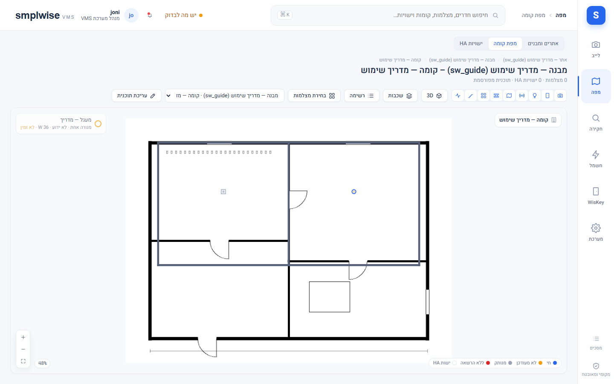
צילום מהדגמה — תוכניות קומה אמיתיות אינן מתפרסמות במדריך.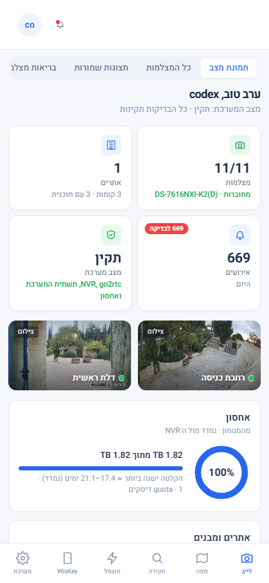
צילום מהמערכת החיה.מפת קומה חיה
מה זה
מפת הקומה היא המסך המרכזי של המוצר: תוכנית אדריכלית מפורסמת עם סיכות (מצלמות וישויות Home Assistant) עליה, במצב חי. היא קיימת בשתי תצוגות — דו־ממד (ברירת המחדל, מהירה ומדויקת) ו- תלת־ממד (רינדור איזומטרי של אותה קומה, לצפייה מרחבית). שתי התצוגות מציגות בדיוק את אותם נתונים — שום פעולה לא זמינה רק באחת מהן באופן מהותי.
איך אני… (צופה ומעלה)
- בוחר קומה. שבב (chip) בראש המפה נוקב בשם הקומה הנוכחית; בורר קומות מאפשר מעבר מהיר בין מבנים וקומות שההרשאה שלי מכסה.
- מזיז ומגדיל את המפה. גלגלת העכבר או צביטה (pinch) מגדילות; גרירת הרקע מזיזה (pan); פקדי הזום יושבים בפינה השמאלית-תחתונה, המקרא בפינה הימנית-תחתונה.
- פותח כרטיס מצלמה. לחיצה על סיכת מצלמה פותחת כרטיס: תמונה חיה בתוך הכרטיס (סשן ששייך לכרטיס הזה בלבד — נסגר כשסוגרים אותו), מצב המצלמה, מיקומה (קומה + חדר/אזור), כפתור "צפייה מלאה" למסך מלא וכפתור "הקלטות" לניגון. Escape סוגר את הכרטיס.
- פותח כרטיס ישות. לחיצה על סיכת ישות (דלת, תאורה, חיישן…) פותחת כרטיס דומה עם מצב הישות והפעולות שההרשאה שלי מרשה להריץ עליה דרך הגשר (bridge) — ראו
40-devices_HE.mdלגבי כללי האישור והסיווג לפי סיכון. - פותח/סוגר שכבות. כפתור "שכבות" פותח פאנל עם מתג נפרד לכל שכבה והספירה שלה: מצלמות, דלתות ואינטרקום, תאורה, אבטחה וחיישנים, שמות חדרים, מבנה, עצמים, מחברים, מצבי חדרים. מתג רק קובע מה מצויר על המסך שלי — הוא לעולם לא מפעיל או מכבה ציוד. מצב השכבות נשמר עם תצוגה שמורה (view).
- עובר לתלת־ממד. כפתור ה-3D ליד בורר הקומה עובר לתצוגה איזומטרית של אותה קומה — קירות, פתחים, מבנה כללי, ואותם סמלי מצלמה/ישות. איכות התצוגה ("רמת איכות", 1=סכמטי / 2=צללים וחומרים) נקבעת בהגדרות (ברירת מחדל להתקנה) וכל דפדפן יכול לדרוס אותה לעצמו; מכשיר איטי חוזר אוטומטית לרמה 1.
- רואה נוכחות מתפוגגת (presence fade). על גבי התלת־ממד, חדר שבו הייתה תנועה לאחרונה מקבל גוון עדין שדוהה בהדרגה (ברירת מחדל: 3 דקות מהתנועה האחרונה; ניתן לכיבוי כך שהגוון יוצג רק כל עוד החיישן פעיל בפועל) — זו רק אינדיקציה חזותית, לא בקרת אבטחה.
- מחליף בין תמונת התוכנית לרקע נקי. מתג "תמונת התוכנית" מעלים או מציג את קובץ התוכנית שנטען מתחת למבנה המצויר; במצב מוסתר רואים רק את המבנה על רקע נקי (שימושי כשהתמונה המקורית עמוסה).
- בוחר מצלמות לפעולה קבוצתית. כפתור "בחירת מצלמות" הופך את המפה לבורר: לחיצות מוסיפות/ מסירות מצלמות (או "בחר הכל"); "קיר חי" פותח בדיוק את הקבוצה הזו על קיר המצלמות; "ניגון מסונכרן" פותח ניגון עם המצלמה הראשונה מובילה ועד שלוש נוספות עוקבות (ראו
31-events_HE.md). - שומר תצוגה (view). "שמירה כתצוגה" שומרת שם, קבוצת מצלמות ופריסת קיוסק; תצוגה אישית שייכת לי בלבד, תצוגה משותפת דורשת הרשאת ניהול משתמשים (
rbac.assign) וגלויה לכל המחוברים. תצוגה שכוללת מצלמה שאין לי הרשאה לצפות בה חי — מוצגת בלעדיה.
איך אני… (עורך ומעלה)
- כניסה לעריכת התוכנית (מיקום מצלמות/ישויות, ציור חדרים, ייבוא, פרסום) — ראו
21-plan-studio_HE.md.
שים לב
- הקונוס שמצויר מול מצלמה הוא המחשה לתכנון בלבד — הוא לא כיסוי (coverage) שנמדד באמת, ושינויו לעולם לא שולח פקודת PTZ למצלמה.
- שום פעולה על המפה לא נכתבת עד לחיצה מפורשת על כפתור השמירה/הפעולה עצמה — גרירת סיכה במצב תצוגה רגילה לא קיימת (זה קורה רק בעורך התוכנית).
- מפה היסטורית (חקירה של רגע שחלף) היא מסך נפרד לחלוטין: אין בה שום כפתור הפעלה, וישויות שם מוצגות לפי היסטוריית מצב שמורה, לעולם לא "חי כאילו היה עבר" — ראו
31-events_HE.md.
צילום מהדגמה — תוכניות קומה אמיתיות אינן מתפרסמות במדריך.
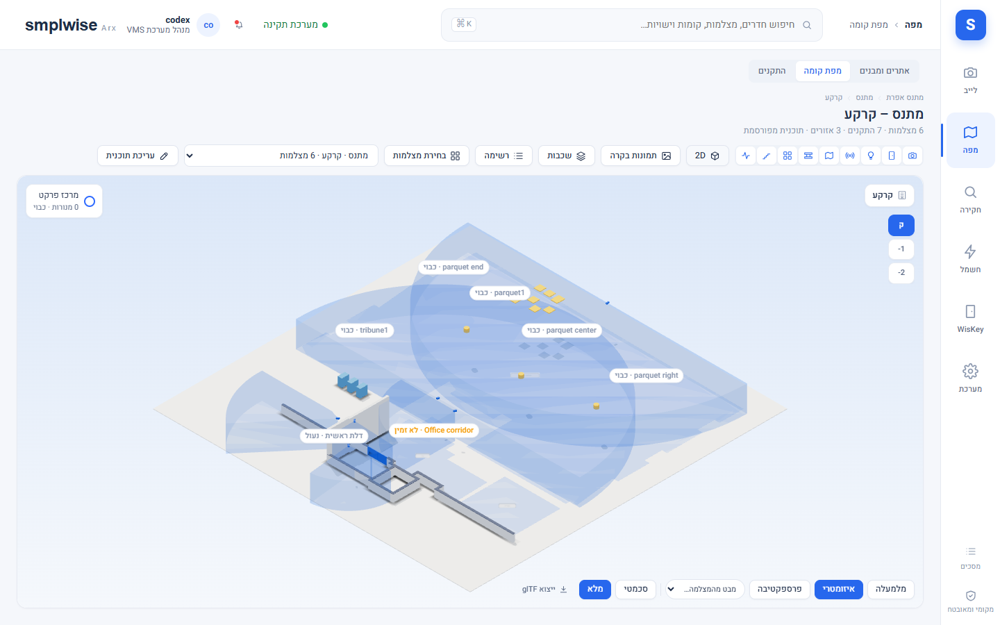
צילום מהדגמה — תוכניות קומה אמיתיות אינן מתפרסמות במדריך.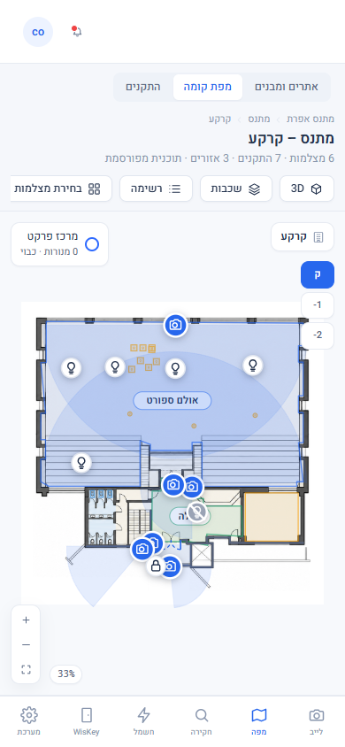
צילום מהדגמה — תוכניות קומה אמיתיות אינן מתפרסמות במדריך.Plan Studio — עורך תוכנית קומה
מה זה
Plan Studio הוא עורך התוכנית: כאן מייבאים שרטוט אדריכלי (PDF/PNG/JPG/DXF), מסמנים קירות וחדרים, ממקמים מצלמות וישויות, ומפרסמים גרסה חדשה שהצופים יראו. הכול נעשה על טיוטה — שום דבר לא משפיע על מה שצופים רואים עד "פרסום" מפורש. גישה לעורך דורשת תפקיד עורך ומעלה, בהיקף שמכיל את הקומה.
איך אני… (עורך ומעלה)
ייבוא תוכנית
- פותחים "ייבוא תוכנית" מתוך מסך הקומה. מעלים קובץ (PDF עד 20 עמודים / PNG / JPG עד 40MB, או קובץ
.dxfשמזוהה לפי תוכן — לא לפי הסיומת שהוקלדה). - PDF מרובה עמודים: בוחרים עמוד.
- סיבוב וחיתוך: האשף מציג את העמוד כשהוא כבר מסובב בצד השרת; מלבן החיתוך נמשך בעכבר ישירות מעל התמונה המסובבת (או מוקלד כאחוזים). סיבוב נוסף מאפס את החיתוך. מה שבתוך המלבן המקווקו הוא בדיוק מה שהגרסה השמורה תכיל — הקובץ המקורי שהועלה לעולם לא משתנה, אפשר לחזור אליו.
- קובצי DXF: נבדקים (יחידות, שכבות, ספירת ישויות, סוגים לא נתמכים) ומרונדרים רק מהישויות הגיאומטריות; טקסט, הצללות (hatches), מידות וישויות תלת-ממד נספרים ומדווחים כהמרה חלקית. בוחרים שכבות ויחידות בכרטיס ה-DXF; קנה מידה נקבע אוטומטית כשהיחידות ידועות. DWG חייב להיות מומר ל-DXF קודם — המוצר לא קורא DWG ישירות.
כלי המבנה
- ציור/עריכת קירות ופתחים: הכול בעכבר על התוכנית — גרירת סיכה מזיזה, גרירת הידית העגולה מסובבת מצלמה נבחרת, גרירת שתי הידיות המרובעות בקצוות הקונוס מרחיבה/מצמצמת שדה ראייה, גלילה מגדילה, גרירת רקע מזיזה (pan). מקשי חצים מזיזים בחירה במעט (Shift = צעד גדול), Delete מסיר, Ctrl+Z/Ctrl+Y ביטול/חזרה, Ctrl+S שמירה. המפקח (inspector) מציג את אותם ערכים כמספרים (כיוון, שדה ראייה, X/Y באחוזים).
- "סמן דלת" (מקש D): במקום לצייר דלת ולכוון אותה, לוחצים פעם אחת על סמל הדלת בשרטוט (הכנף, הקשת, או על הקיר במקום הדלת). המערכת בודקת את השרטוט סביב הלחיצה ברזולוציה המלאה של התוכנית ומציעה דלת מקווקוות: הקיר, המיקום, הרוחב, צד הציר וכיוון הפתיחה לפי הסמל - קשת, קו סגירה ישר ("משולש"), כנף פתוחה באלכסון, דלת כפולה (שתי קשתות או "V"), או פער בקיר. תווית קטנה אומרת מה נמצא: "נמצאה קשת", "נמצא פער", או "ברירת מחדל - בדוק" (לא נמצא סמל: דלת ברוחב 0.9 מ׳ על הקיר שנלחץ). שלוש ידיות משנות את ההצעה לפני האישור: הריבוע בקצה הדלת - גרירה לאורך הקיר משנה את הרוחב; ⇄ - מחליף את צד הציר; ⇅ - מחליף את כיוון הפתיחה (בדלת כפולה: את הצד). Enter או לחיצה על ההצעה מאשרים; לחיצה על סמל הדלת הבאה מאשרת את ההצעה המוצגת ומציעה את הבאה - כך מסמנים קומה שלמה בכמה דקות; Esc מבטל. הדלת שנוספת היא פתח רגיל: עורכים, מבטלים (Ctrl+Z), מפרסמים ורואים אותה בתלת-ממד כמו כל דלת.
- אין קיר מצויר לאורך הדלת (למשל לפני שקירות זוהו או צוירו): ההצעה מגיעה עם קטע קיר קצר משלה (רוחב הדלת ועוד 12 ס״מ מכל צד) ועם אזהרה - בדוק את עוביו ואת החיבור לקירות הסמוכים.
- אין סמל ואין קיר ליד הלחיצה: מוצגת הודעה ולא נוספת דלת - לחץ על הסמל עצמו או צייר קודם את הקיר.
- זה עיבוד תמונה מקומי בלבד, בלי AI; שום תמונה לא יוצאת מההתקן ושום דבר לא נשמר עד האישור.
- מוסכמת כיוון: 0° מצביע למעלה על התוכנית, מעלות גדלות עם כיוון השעון.
- "עיבוד לשפת SMPLWISE" (ניקוי חזותי): הופך שרטוט אדריכלי לרינדור נקי בטוקני העיצוב — טקסט, קווי מידה ומתאר ריהוט דקים מוסרים, קירות הופכים לרצועות אפורות-כחולות, חדרים סגורים בלבן, חוץ בצבע קנבס. שלוש עוצמות ניקוי (קל/בינוני/חזק) ושתי בחירות נוספות (מילוי חדרים, השארת ריהוט/דלתות בגוון עמום). "עבד תצוגה מקדימה" מרנדר השוואה; "השתמש בתוצאה" הופך אותה לתמונת המפה. זה עיבוד תמונה מקומי בלבד (Pillow/numpy) — בלי AI, שום דבר לא יוצא מההתקן. "הצג מקור" חוזר לתמונה המקורית בכל עת; הקואורדינטות של הסיכות זהות בשני המצבים.
זיהוי חדרים ואזורים
- "זהה חדרים" מריץ זיהוי מקומי (אותו ניתוח קירות כמו בעיבוד לשפת SMPLWISE, שלוש עוצמות) ומציע פוליגון אחד לכל חדר סגור, מקווקו על המפה, עם שורת שם/סוג (חדר/אזור/מסדרון/חוץ/שירות) לכל אחד או השמטה. "שמור" שומרת את הנבחרים.
- "מחוץ למבנה הראשי" (0.1.130): קווים שהמערכת זיהתה כמבנה משני נפרד (למשל אגף צדדי, לא רק רעש שרטוט) לא נמחקים — הם מסומנים בקו מקווקו מיוחד עם תווית ומופיעים כספירה נפרדת בסיכום הזיהוי, כך שאפשר להחליט לגביהם ידנית במקום שהם ייעלמו בשקט.
- "צייר אזור" ידני: לחיצה על פינות, Enter או לחיצה על הפינה הראשונה סוגרת את הפוליגון. בחירת אזור עורכת שם, סוג, צבע והשתתפות בחיפוש מרחבי. עיצוב מחדש: גרירת פינה מזיזה, גרירת ידית קטנה באמצע קצה מוסיפה פינה, לחיצה כפולה על פינה מסירה אותה (מינימום שלוש פינות באזור).
- אזורים הם שכבת נתונים לצד התוכנית — שורדים שינוי רינדור (מקור/שפת SMPLWISE) ולעולם לא נצרבים לתוך התמונה. אזור במפה הוא הקשר מרחבי לחיפוש ולחוקים בלבד — לא אזור זיהוי מצלמה ולא מסכת פרטיות, ולא משנה שום דבר ב-NVR.
כיול (calibration)
- תוכנית לא מכוילת מציגה מרחקים כאומדן (≈), מסומן
plan.estimates; אחרי כיול (סימון שני נקודות במרחק ידוע) המרחקים מוצגים כמדויקים.
פרסום, גרסאות ורולבק
- "פרסום גרסה" תמיד עובר דרך תצוגה מקדימה: "השווה" מציג את שתי התמונות זו לצד זו, את שינוי הגיאומטריה, ומה קורה לכל פריט ממוקם.
- כרטיס "גרסת תוכנית" מציג היסטוריה מלאה; "שחזר" משחזרת גרסה מארכיון כעותק מפורסם חדש — סיכות עוקבות כשהגיאומטריה זהה, אחרת נשארות במקום והמפה מסמנת אותן לבדיקה. גרסאות מפורסמות לעולם לא נמחקות, כדי שהמפה ההיסטורית תוכל להציג את התוכנית שהייתה בתוקף בכל רגע.
- עריכה מיושנת (מישהו אחר שמר בינתיים) טוענת מחדש את המפה במקום לדרוס בשקט.
שים לב
- שום דבר לא נכתב עד "שמירת מיקום"/"שמירה" מפורשת; פרסום טיוטה הוא פעולה נפרדת מהעריכה עצמה.
- זיהוי החדרים והמבנה הוא עיבוד תמונה מקומי — הוא אינו קורא שמות חדרים מהשרטוט, רק מציע פוליגונים.
- קובץ התוכנית המקורי שהועלה אף פעם לא משתנה, גם לא אחרי עיבוד לשפת SMPLWISE או חיתוך/סיבוב.
- מפלס (level) שהוא "הראשי" לא ניתן להחלפה בעצמו — צריך להפוך מפלס אחר לראשי קודם.
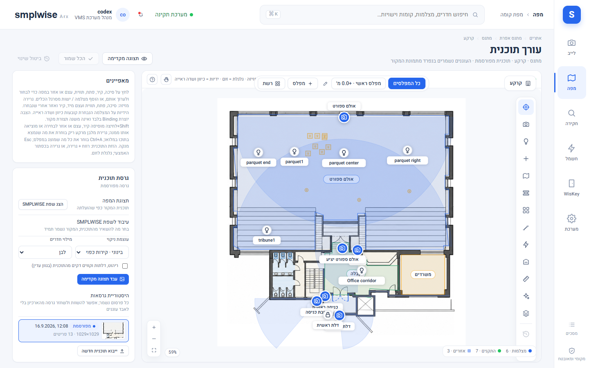
צילום מהדגמה — תוכניות קומה אמיתיות אינן מתפרסמות במדריך.וידאו חי — סקירה, קיר מצלמות ומצלמה בודדת
מה זה
לייב הוא אזור הווידאו החי: מסך "סקירה" (Dashboard) עם מצב ההתקנה במבט אחד, "כל המצלמות" (קיר) לכמה מצלמות בבת אחת, ומסך מצלמה בודדת עם הזרם, בקרות ופרטי בריאות. הכול עובר דרך ממסר WebSocket בין הדפדפן ↔ שרת המערכת ↔ go2rtc: הדפדפן לעולם אינו לומד כתובת go2rtc או RTSP כלשהי, וכל בקשת זרם נבדקת מחדש לפי המצלמה והקומה שהיא ממוקמת עליה.
שתי דרכי תעבורה: MSE (ברירת המחדל — fMP4 מעל שקע הממסר; עובד דרך הכניסה הרגילה למערכת, מנהרת Cloudflare ו-CGNAT) ו-WebRTC (השהיה נמוכה יותר, אך דורש UDP ישיר בין הדפדפן למארח go2rtc — תקין ב-LAN, לא דרך מנהרה). auto מנסה WebRTC ונופל חזרה ל-MSE. במעבדת הפיילוט: פרופיל sub (H.264 Baseline, 640×360) מתנגן ב-WebRTC תוך שניות; פרופיל main (H.264 Main, 2560×1440) מתחבר ב-WebRTC אבל דפדפנים אינם מפענחים אותו מ-RTP, כך ש-auto נופל ל-MSE אחרי כ-12 שניות. ל-MSE יש עוד עיכוב משלו: הפריים הראשון מוצג רק ב-key frame הבא, ועם GOP של כ-8 שניות ב-NVR זה 8–12 שניות נוספות עד לתמונה הראשונה. ברירת המחדל של ההתקנה נקבעת בהגדרות ← וידאו ומדיה; כל נגן יכול לדרוס אותה לדפדפן הנוכחי בלבד (ראו 80-settings_HE.md).
**וידאו מרחוק (SmplWise Arx, https://<כתובת הגישה מרחוק>/arx). מחוץ לבית הכלל שונה: הנגן מתחיל בזרם שנבחר בהגדרות ← גישה מרחוק ← "זרם ברירת מחדל" (ראשי, כברירת מחדל) ב-WebRTC**, כדי שהווידאו יעבור ישירות ולא דרך המנהרה. תג קטן על התמונה מראה מה מנסים ("מנסה main·WebRTC…") ואחר כך מה מתנגן: main·WebRTC, sub·WebRTC או main·MSE. אם WebRTC לא מצליח (לא מתחבר, או שהווידאו מגיע אבל הדפדפן לא מפענח ממנו אף תמונה; בקישור איטי הנגן מחכה עד 30 שניות) - כש"MSE כמוצא אחרון" מותר, אותו זרם עובר ל-MSE דרך המנהרה והנגן אומר זאת; כשהוא אסור, הנגן עובר לזרם השני ב-WebRTC ומציג "הזרם הראשי אינו ניתן לפענוח ב-WebRTC - ראה הגדרות › וידאו", ואם גם זה לא מתנגן - רק את ההודעה. הסיבה השכיחה היא הקידוד של הזרם הראשי ב-NVR: דפדפנים מפענחים ב-WebRTC רק H.264 בלי B-frames ובלי SVC, לא H.265. המערכת קוראת את הקידוד מה-NVR בכל גילוי מצלמות; מצלמה שהזרם הראשי שלה לא יתנגן ב-WebRTC מופיעה עם הנחיה מדויקת בבריאות המערכת (כרטיס "וידאו ב־WebRTC"), בשורת היכולות של המצלמה ובאשף ההתקנה, ומרחוק היא מדלגת ישר לנפילה בלי לחכות. במעבדת הפיילוט לשבע מתוך עשר מצלמות הזרם הראשי הוא H.264 עם SVC מופעל ושלוש הן H.265 - מכבים SVC בזרם הראשי ב-NVR ועוברים ל-H.264 (או בוחרים "משני" כברירת המחדל המרוחקת). כששרת הווידאו (go2rtc) לא זמין הנגן אומר "שרת הווידאו אינו זמין". קיר המצלמות ואריחי המפה נשארים מרחוק על הזרם שלהם (משני כברירת מחדל). בתוך הבית (הכניסה הרגילה / LAN) הנגן נשאר כמו שהיה.
איך אני… (צופה ומפעיל)
- פותח את "סקירה" (לייב, מסך הבית): ברכה לפי אזור הזמן, מצלמות מחוברות מתוך הסך הכול עם דגם הרשם, אתרים/קומות עם תוכניות מפורסמות, אירועי היום עם ספירת "לא טופלו", מצב מערכת מתוך תקציר הבריאות, שתי תצוגות חיות לדוגמה, ואחוז אחסון בשימוש (רק למי שרשאי לקרוא את דוח האחסון). הרצועה "דורש תשומת לב" מרכזת: מצלמות לא מקוונות, בדיקות בריאות כושלות, אירועים לא טופלו, זרם התראות שלא מסר דבר (ה-NVR צריך "Notify Surveillance Center"), וחיבור לתשתית המערכת שאבד — כל שורה עם הסיבה שהיא מוצגת וכפתור למסך הנכון. מתרענן כל דקה.
- פותח "כל המצלמות" (קיר). "פריסה" קובעת עמודות ורוחב; "סידור הקיר" משנה סדר הופעה. תצוגות שמורות (הגדרות ← לייב,
rbac.assignלתצוגה משותפת) פותחות בדיוק את קבוצת המצלמות שנשמרה, על הקיר או בקיוסק. מעל תקרתmedia.max_live_sessions(ברירת מחדל 8) אריחים נוספים מציגים רק תצוגה מקדימה (snapshot) עד שמתפנה סשן. - פותח מצלמה בודדת. תג המצב (חי / מנותקת / לא ידוע), "מסך מלא", עוצמת שמע (אם המצלמה תומכת באודיו דו-כיווני), "צילום מסך" ו"רענון תמונה". "מצלמות באותה קומה" מקפיצות בין שכנות. פתיחת "הקלטות" עוברת לניגון של אותה מצלמה (ראו
31-events_HE.md). - בודק בריאות ויכולת. כרטיס הפרטים מציג PTZ (נתמך/לא נתמך/לא ידוע, עם הסיבה מה-NVR), רשימת presets ואודיו דו-כיווני בדיוק כפי שה-NVR מדווח — קריאה בלבד; שום תנועת PTZ, קריאת preset או דיבור לא מוצעים בפיילוט. אזורי הזיהוי (רשת תנועה, מסכות פרטיות, חדירה, קווי חציית קו) מצוירים מעל התצוגה המקדימה, גם הם קריאה בלבד מה-NVR, ואינם חדרים על תוכנית הקומה.
- מבצע זום דיגיטלי. הגדלה בדפדפן בלבד — לא מזיזה את המצלמה עצמה. פקדי הכיוונים (אם המסך מציע "בקרת PTZ") מיועדים למצלמה עם PTZ אמיתי בלבד.
איך אני… (עם ההרשאה הרגישה המתאימה, nvr.config.*)
- מקליט ידנית. כפתור הקלטה ידנית בכרטיס המצלמה, עם משך נבחר — כתיבה מתועדת ל-NVR (GET ← PUT ← GET לאימות), ניתנת לביטול ומוצגת ביומן השינויים של הגדרות ← חיבורים.
- **עורך אזורי זיהוי תנועה ורגישות (
nvr.config.detection, תפקיד מותאם אישית).** ציור תאים, "בחר הכל"/"נקה", רגישות בצעדי המכשיר עצמו (ערך ביניים מתעגל, לעולם לא מתעלם בשקט). "שמור ל-NVR" מציג את ההפרש (תאים +/‑, רגישות ישנה ← חדשה) לפני כתיבה אחת הפיכה; כתיבה שה-NVR אישר אך לא שמר מדווחת "ללא אפקט" ולא נספרת כהצליחה.
שים לב
- מה "אין חיבור" אומר, ולמה לבדוק: באנר "אין חיבור לשרת" בדפדפן פירושו שהדפדפן לא הצליח להגיע כלל לשרת המערכת (רשת/הפעלה מחדש) — לא בעיית מצלמה. תג "המצלמה מנותקת מה-NVR" על אריח פירושו שהסנכרון האחרון מה-NVR (בהפעלה וכל 10 דקות, או "סנכרון מצלמות" מיידי בהגדרות) לא ראה את הערוץ הזה כמחובר — לבדוק כבל/רשת המצלמה עצמה ואת ה-NVR. כשל בפתיחת הזרם עצמו (למשל
source_unavailable) מתנסה שוב עם נסיגה (3 ← 30 שניות) ומוצג ככשל, לעולם לא כ"חי" מדומה. תג "אין הרשאת צפייה" פירושו שהתפקיד שלכם לא כולל את הקומה שהמצלמה ממוקמת עליה. - מצלמה שאינה ממוקמת על תוכנית קומה עדיין נגישה כאן, אך אינה מופיעה בחיפוש מרחבי או בקורלציה דלת-מצלמה-חיישן.
- שום פעולה במסכים האלה אינה כותבת ל-NVR פרט לשתיים שסומנו למעלה, וגם הן דורשות הרשאה מפורשת ומתועדות. פרטים נוספים ופתרון תקלות מורחב ב-
95-troubleshooting_HE.md.
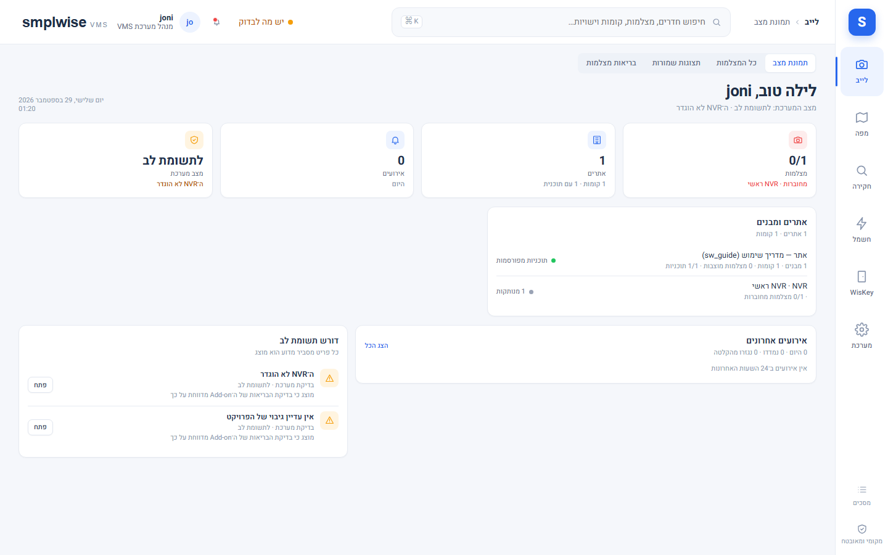
צילום מהמערכת החיה.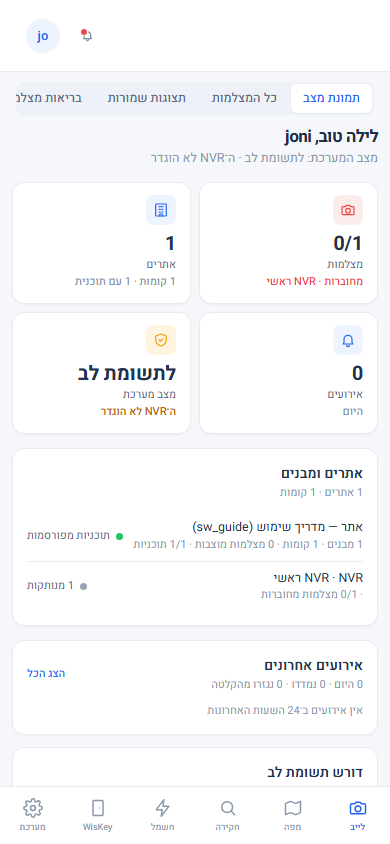
צילום מהמערכת החיה.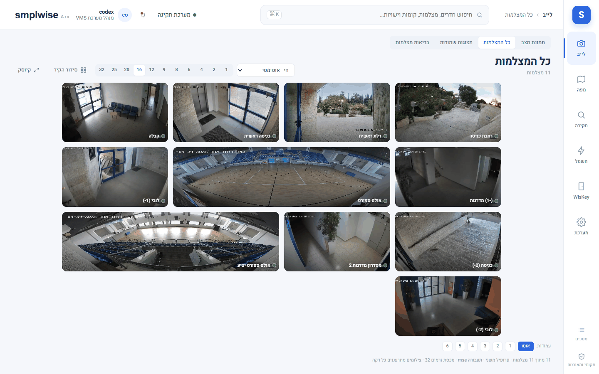
צילום מהמערכת החיה.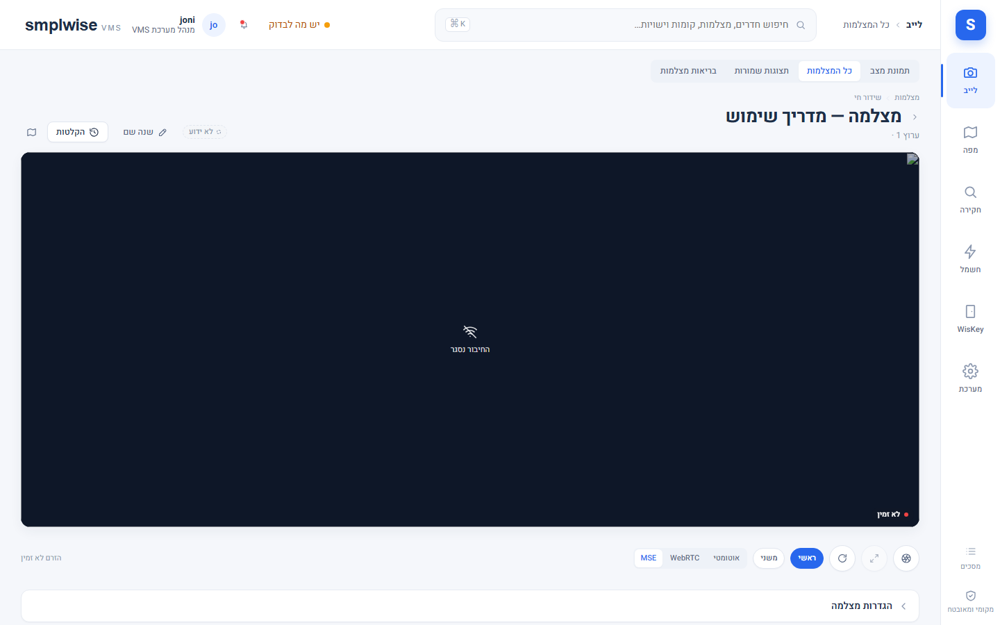
צילום מהמערכת החיה.מרכז אירועים, ניגון ותיקי חקירה
מה זה
חקירה היא אזור ההיסטוריה: מרכז האירועים (רשימה וחיפוש), הקלטות וניגון עם ציר זמן, מפה היסטורית (מצב הקומה ברגע נבחר), ותיקי חקירה שאוספים אירועים/קטעים/הערות לחבילת ראיות ניתנת לייצוא. אירועים מגיעים משני מקורות, שניהם מתויגים: מדודים (measured) מזרם ההתראות של ה-NVR, ו-נגזרים (inferred) שמופקים מחיפוש ההקלטות — אירוע נגזר לעולם אינו מוצג כהתראה מדודה. ה-NVR שולח התראה רק כשהקישוריות שלו כוללת "Notify Surveillance Center"; בלעדיה הזרם נושא פעימות לב אך לא התראות (ראו 95-troubleshooting_HE.md).
איך אני… (צופה ומפעיל)
- מסנן במרכז האירועים. יום/סוג/מצלמה/מקום (קומה ← חדר/אזור, לפי מיקום הסיכה בפועל)/מקור/ לא-טופל, עם עדכונים חיים דרך WebSocket. השורה שמעל הרשימה נוקבת אילו שדות יש להם נתונים ב-90 הימים האחרונים ולמה לאחרים אין (למשל מסנני אדם/רכב/חדירה אינם נתמכים עד שאירועי smart מוגדרים במצלמה — מוצג "המסנן אינו נתמך כאן", לא רשימה ריקה מטעה). "חלונות" מקבצת אירועים סמוכים של אותה מצלמה (פער 1–10 דקות, לבחירה) לשורה אחת; "סמן הכל כטופל" מטפל בחלון שלם, בלי למזג או למחוק את האירועים הגולמיים.
- פותח עמוד אירוע. ניגון מ-2 שניות לפני האירוע, כרטיס הקשר (טופל על ידי מי, מקור, סוג, משך, מיקום עם תוכנית וסיכה מודגשות), קורלציה דלת-מצלמה-חיישן (חיישנים/מנעולים סמוכים וטווח ±2 דקות, כל שורה מסומנת "נמדד"/"נגזר"/"פקודה" — פקודה אינה הוכחה שהדלת נפתחה), ומסלול מוצע (מצלמות שכנות מדורגות לפי טופולוגיית המפה — השערה, לעולם לא זיהוי אדם/רכב). "סמן כטופל" (
events.ack) נכתב ביומן הביקורת בשם המשתמש. - מנגן ומייצא. ציר הזמן תומך ב-seek, ±10 שניות, האטה ×0.5/×0.25 וצעידת פריים; ריחוף מציג תצוגה מקדימה. "השוואה" מוסיפה עד שלוש מצלמות נוספות סביב שעון-אב אחד (best effort, ללא עוגן PTS↔UTC מאומת — סחיפה מוצגת לכל אריח). "ייצוא קטע": לבחור טווח, לקבל אומדן קבצים/בייטים, לאשר ולעקוב אחרי המשימה תחת ייצוא והורדות; החיתוך הוא ב-key frame, וה-manifest מתעד טווח מבוקש מול בפועל וגרסת pipeline (דורש
video.export). - פותח מפה היסטורית. "המשך חקירה במפה" מציג את הקומה ברגע הנבחר עם גרסת התוכנית שהייתה בתוקף אז: סיכת מצלמה כחולה כשיש כיסוי הקלטה, מקווקוות כשאין; התקנים מוצגים עם המצב שההיסטוריה המקומית מכירה לאותו רגע או "לא ידוע" (ולמה — ההיסטוריה לא ממולאת קדימה בלי גבול). ציר זמן תחתון גולל את היום; "נגן מכאן" פותח ניגון; לא ניתן להפעיל ציוד מהמסך הזה.
איך אני… (מפעיל, מנהל אתר, מנהל מערכת — תיקי חקירה)
- פותח או עורך תיק (
cases.manage): מעמוד אירוע ("הוסף לתיק"), מהניגון (קליפ 15 שניות לפני/45 אחרי הסמן) או מהמפה ההיסטורית, ובנוסף "תיק חדש" ברשימת התיקים. פריט מציג את מצבו האמיתי: "סימנייה ל-NVR בלבד" (עדיין ניתנת לדריסה שם), "שמור עותק" (מריצה ייצוא; הופך ל"עותק שמור" רק כשהעותק הושלם), "חסר" (ה-NVR כבר מחק — לעולם לא "משומר"), "לא נבדק". - בונה חבילת ראיות (ZIP). קליפים שמורים עם ה-manifest שלהם, תצוגות מקדימות, הערות, manifest עם SHA-256 לכל קובץ, דוח קריא, וסימניות שלא נשמרו מוצגות כדולגו. כל חבילה חתומה ב-Ed25519 במפתח הפעיל של ההתקנה (
manifest.sig.json). - מאמת חבילה ("אימות חבילה", כל מי שרשאי לקרוא אירועים): מעלים ZIP, כל קובץ מגובב מחדש ומושווה ל-manifest — שום דבר לא יובא בשלב הזה. התוצאה מבדילה בין "חתום על ידי מפתח של התקנה זו" (פעיל או פרוש), "חתום על ידי מפתח לא ידוע" (שלמות בלבד) ו"לא חתום" (חבילות ישנות). מה ההתאמה מוכיחה: SHA-256 תואם ו-manifest שלם = הקבצים לא השתנו מאז הייצוא; חתימה תקינה של מפתח התקנה זו = ההתקנה הזו הפיקה את החבילה; חתימה תקינה של מפתח לא מוכר = שלמות בלבד. מה זה לא מוכיח: אמיתות הצילום במקור, שעון המצלמה, או קבילות משפטית — המצלמה, ה-NVR והרשת נשארים מחוץ לכל hash וחתימה.
- מייבא חבילה מהתקנה אחרת ("ייבוא חבילת ראיות",
cases.manageבהיקף ההתקנה, 0.1.131): מריץ קודם את אותו אימות ומציג דוח לכל קובץ (תואם/שונה/חסר/פגום), את ההתקנה שהפיקה (מזהה, גרסת SMPLWISE, זמן ייצוא) והאם זו ההתקנה הזו. "ייבא כתיק" פעיל רק כשהכול תואם, ואז יוצר תיק חדש מסומן "מיובא" עם באנר מקור (התקנה, זמן ייצוא, SHA-256 של החבילה, "hash תואם" בזמן הייבוא) וכפתור "בדיקת hash חוזרת" שמגבב מחדש את העותקים השמורים בכל עת. קבצי הקליפ/ תצוגה מקדימה נשמרים תחת/data/imported/<sha256>/; הערות הופכות ל"מיובא · לקריאה בלבד"; סימניות שהמקור לא שימר מוצגות "לא נכללו בחבילת המקור". פריטים מיובאים לא ניתנים להסרה בודדת — רק מחיקת התיק כולו מסירה אותם ואת הקבצים. אותה חבילה מיובאת פעם אחת (409 מציין את התיק הקיים); אחרי מחיקתו ניתן לייבא שוב. מה חבילה מיובאת אינה יכולה לעשות: שום דבר בה הופך למצלמה, אירוע, תוכנית, משתמש, שיוך או הגדרה — מזהי מצלמת מקור נשמרים כטקסט בלבד, ורק קבצי קליפ/תצוגה ששמם עובר רשימת היתר קפדנית מגיעים לדיסק, מוגשים לפי הסוג האמיתי שלהם (בדיקת תוכן, לא סיומת). מוגבל בגודל (cases.import_max_mb, ברירת מחדל 512MB) ונדחה לפני קריאה כשהארכיון חשוד (נתיבים חורגים, סימלינק, ספירת קבצים קיצונית). הבייטים המיובאים נספרים במערכת ← אחסון ("ראיות מיובאות") ובדוח הבריאות, ואינם חלק מגיבויי הפרויקט (כמו תצוגות מקדימות של אירועים).
איך אני… (מנהל אתר, מנהל מערכת — חוקים והתראות, אם המסך זמין בהתקנה)
- בונה חוק: טריגר (סוגי אירועים, מקורות, חומרה) × היקף (קומות/חדרים/מצלמות, ריק = הכל) × חלון זמן (יכול לחצות חצות) × תקופת צינון. הפעולה היחידה היא התראה בתוך ה-VMS או שירות
notifyשל תשתית המערכת — לעולם לא פקודת התקן. "הרצה יבשה" מריצה מחדש את אירועי 24 השעות האחרונות דרך אותו מתאם ומסבירה למה כל אחד היה או לא היה מעורר, בלי לכתוב דבר. דורשrules.manage.
שים לב
- כל אישור טיפול, שינוי תיק, ייצוא, אימות וייבוא נכתבים ביומן הביקורת.
- שמירת אירועים (
events.retention_days, ברירת מחדל 30 יום) וקבצי ייצוא (exports.retention_days, ברירת מחדל 7 ימים) נמחקים אוטומטית בתום התקופה; חבילות ראיות ופריטים מיובאים אינם כפופים לשמירה הזו — הם נשארים עד מחיקת התיק. - אירוע סמוך במסלול המוצע או בקורלציה הוא הקשר בלבד — לעולם לא טענה לזיהוי אותו אדם/רכב.
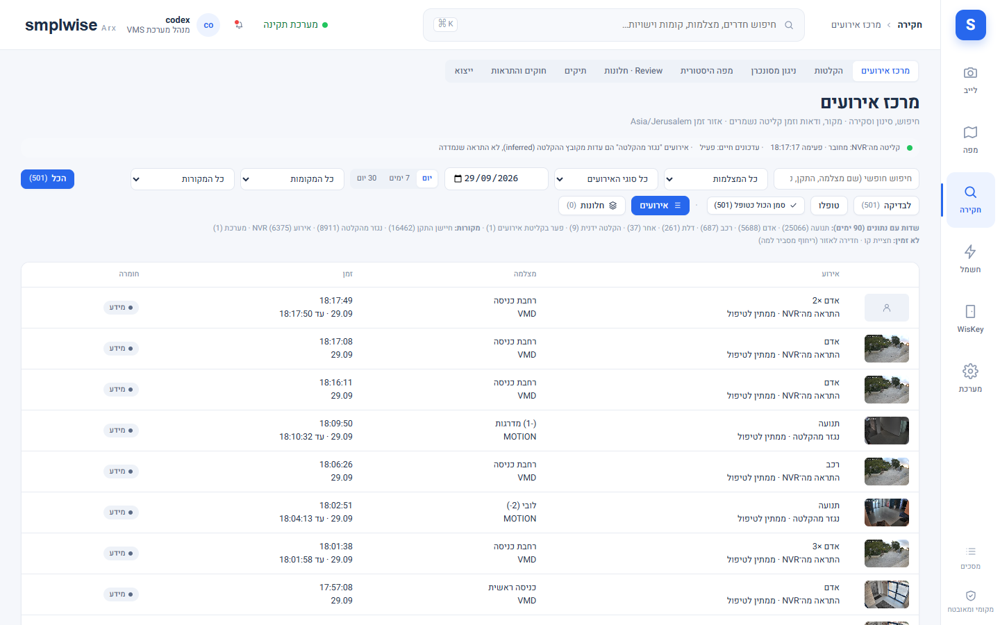
צילום מהמערכת החיה.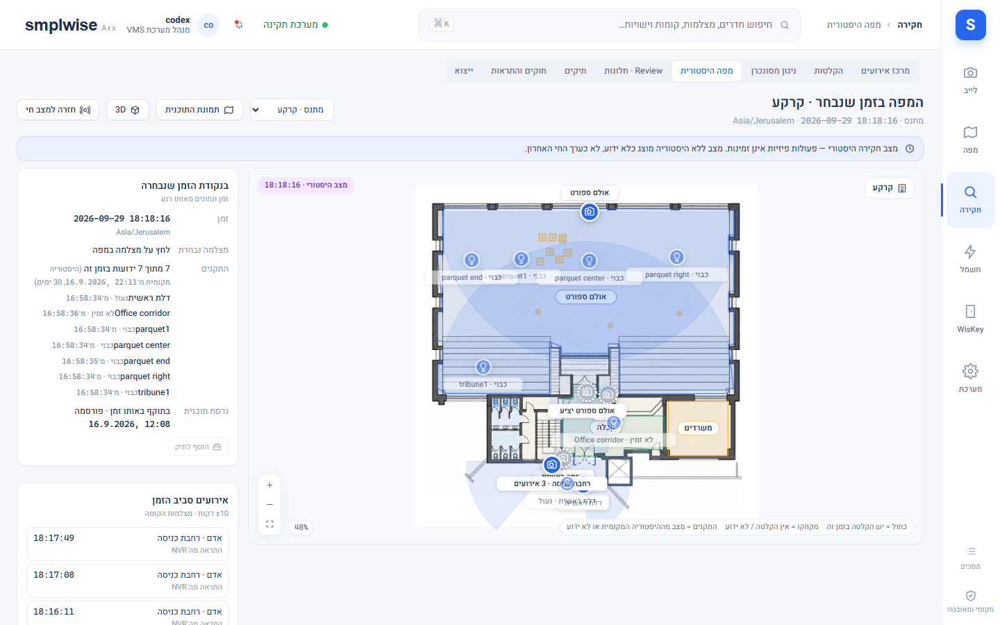
צילום מהדגמה — תוכניות קומה אמיתיות אינן מתפרסמות במדריך.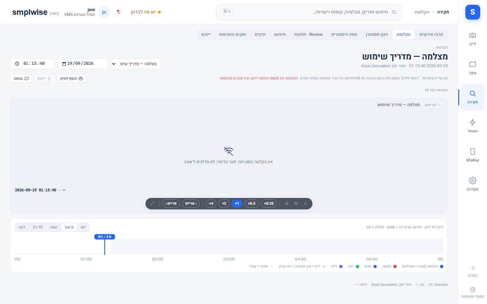
צילום מהמערכת החיה.אבטחה › אזעקה
מה זה
"אבטחה" מרכז במקום אחד את כל רכיבי האבטחה: לייב (מצלמות), חקירה (אירועים, הקלטות, תיקים) ואזעקה. בסרגל הצד (ובסרגל התחתון בטלפון) יש כניסה אחת, "אבטחה"; בראש המסך בוחרים חלק (לייב | חקירה | אזעקה), ומתחתיו מופיעים העמודים של החלק שנבחר. לחיצה על "אבטחה" פותחת את החלק שבו השתמשתם בפעם האחרונה.
מסך האזעקה מציג את לוח האזעקה של המבנה: אם הוא דרוך או מנוטרל, כפתורי דריכה ונטרול, והחיישנים (אזורים) של המערכת - כל אחד עם המצב החי שלו ומתג עקיפה. הנתונים מגיעים ממערכת האזעקה עצמה ומתעדכנים מעצמם.
איך אני… (צופה ומעלה)
- רואה את מצב האזעקה. הכרטיס העליון מציג את המצב באותיות גדולות ובצבע: "מנוטרלת" (ירוק), "מופעלת מלאה", "מופעלת חלקית", "מופעלת · לילה" (סגול), "בהשהיית יציאה" / "בהשהיית כניסה" (כתום), "אזעקה!" (אדום מהבהב), "לא זמינה" (אפור). מתחת: מי שינה לאחרונה ומתי.
- בוחר לוח. כשיש יותר מלוח אחד (למשל שתי מחיצות - "בית" ו"חצר"), שורת כפתורים מעל הכרטיס מחליפה ביניהם.
- בודק "מוכנה לדריכה?". כשהאזעקה מנוטרלת, הכרטיס מפרט אילו חיישנים פתוחים או בתקלה. אפשר לסגור אותם או לעקוף אותם לפני הדריכה.
- עובר על החיישנים. החיישנים מקובצים לפי אזור בבית. לכל חיישן: מצב (פתוח / סגור / תנועה / תקלה / עקוף), מתי השתנה, ו"חבלה" או "סוללה חלשה" כשהחיישן מדווח עליהם. חיישן שמשותף לשתי מחיצות מסומן "משותף".
- מסנן. "פתוחים בלבד", "עקופים", "תקלות", או "הכל".
איך אני… (מפעיל ומעלה - לפי ההרשאות שלכם)
- דורך את האזעקה. לוחצים על מצב הדריכה הרצוי (דריכה מלאה, דריכה חלקית, דריכת לילה - רק המצבים שהלוח תומך בהם). דריכה אינה מבקשת אישור. אם המשתמש שלכם חייב קוד, נפתחת מקלדת.
- מנטרל. "נטרול" מבקש תמיד אישור. אם נדרש קוד, מקלידים אותו במקלדת שנפתחת (הקוד מוסתר, השדה מתרוקן כשסוגרים).
- עוקף חיישן. המתג "עקיפה" שליד החיישן מוציא אותו מההגנה (הוא לא יתריע) עד שמחזירים אותו. גם עקיפה וגם החזרה מבקשות אישור, ועקיפה הולכת לפי אותה מדיניות קוד כמו נטרול.
- מגדיר קוד אישי. "הקוד האישי שלי" (בראש המסך) - קוד של 4 עד 8 ספרות לאזעקה בלבד. זה אינו קוד הלוח; שינוי קוד קיים דורש את הקוד הנוכחי.
- מבין את התשובה. אחרי שליחה מופיעה שורה: "נשלח · ממתין לאישור הלוח" ואז "הלוח אישר". "הלוח לא אישר את הפקודה בזמן" אומר שהלוח לא דיווח על שינוי - לעתים כי הקוד שגוי; המצב שמוצג הוא תמיד מה שהלוח עצמו מדווח.
איך אני… (מנהל מערכת)
- שומר את קוד הלוח. הגדרות › מערכת › אזעקה › בכרטיס של הלוח: מקלידים קוד ושומרים. הקוד נשמר מוצפן ואינו מוצג שוב - רואים רק "מוגדר", מתי ועל ידי מי. אפשר להחליף או למחוק.
- קובע מי צריך קוד. משתמשים והרשאות › משתמש › "אזעקה": דריכה ונטרול, כל אחד בנפרד, "ללא קוד" (לחיצה אחת, המערכת שולחת את קוד הלוח השמור) או "חייב קוד" (ברירת המחדל). שם גם קובעים או מוחקים קוד אישי של משתמש.
- בוחר איזה קוד מקלידים. הגדרות › מערכת › אזעקה: "קוד אישי לכל משתמש" (ברירת מחדל - אף משתמש לא לומד את קוד הלוח) או "קוד הלוח".
- קובע מה מותר מחוץ לבית. שליטה מרחוק, נטרול ועקיפה מרחוק, ו"ללא קוד גם מרחוק" (פעיל כברירת מחדל).
- מתקן שיוך. טבלת השיוך מראה לכל חיישן את מתג העקיפה שלו ולפי מה שויך. אפשר לבחור מתג אחר, "ללא עקיפה", לשייך חיישן למחיצה אחת, או להוציא חיישן שאינו אזור. מתגים שלא שויכו מוצגים תחת "ללא שיוך".
שימו לב
- נטרול ועקיפה תמיד מבקשים אישור; דריכה לא. הפעלת אזעקה ("trigger") לא קיימת במסך.
- קודים לא נשמרים גלויים ולא מוצגים. קוד הלוח נשמר מוצפן, קוד אישי נשמר רק כטביעה חד-כיוונית, ושום קוד לא מופיע ביומן הביקורת, בהודעות שגיאה או בכתובת הדפדפן.
- 5 קודים שגויים בתוך 5 דקות נועלים את הקלדת הקוד לאותו משתמש, או לאותו לוח, למשך 10 דקות.
- כל פעולה נרשמת ביומן הביקורת - מי, מה, על איזה לוח או חיישן, התוצאה, ואם נעשתה מתוך הרשת או מבחוץ.
- מבחוץ עם "ללא קוד": הנעילה הביומטרית קיימת רק באפליקציית האנדרואיד ורק אם הופעלה בה; בדפדפן אין נעילה כזו. מנהל יכול לכבות את "ללא קוד גם מרחוק" כדי שכל פעולה מבחוץ תבקש קוד.
- שתי מחיצות: חיישן שהמערכת לא יודעת לאיזו מחיצה הוא שייך מופיע בשתיהן ומסומן "משותף", עד שמנהל משייך אותו.
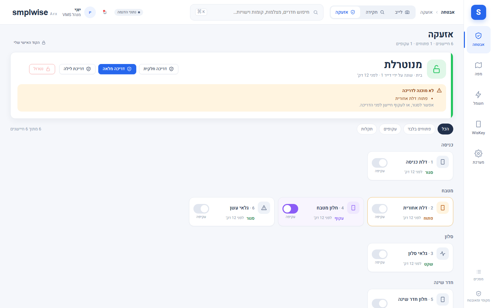
צילום מהדגמה - הלוח, החיישנים והשמות בדויים.
חשמל והתקנים
מה זה
"חשמל והתקנים" הוא האזור לשליטה בציוד הבית (תאורה, מזגנים, תריסים, מתגים, מסכים) מאורגן לפי מבנה ← קומה ← אזור, בלי צורך לעבור דרך המפה. פעולות עוברות תמיד דרך אינטגרציית SMPLWISE Bridge בזהות חשבון המערכת האמיתית של המשתמש הפועל — הרשאות תשתית המערכת עצמה מחליטות אחרונות, בנוסף להרשאות ה-VMS.
איך אני… (צופה ומעלה)
- מנווט בעץ המבנה. מסך "המבנה" מציג עץ קומות/אזורים עם נקודות מצב (state dots) וספירות (תאורה דולקת, תריסים פתוחים, מיזוג פעיל, מנעולים נעולים, אזעקה); לחיצה על קומה (או על שם הקומה בכרטיס שלה) פותחת כרטיס קומה עם שורה לכל אזור, ולחיצה על אזור נכנסת ישר למסך האזור. ריחוף עם העכבר (או מעבר במקלדת) מציג סיכום של האזור עם הפעולות המהירות; במסך מגע הסיכום נפתח מכפתור "⋯" שבסוף השורה. מונים ותחומים שאין מהם אף התקן (למשל אין תריסים במבנה) פשוט לא מוצגים.
- בוחר פריסה. "פריסה" מחליף בין כרטיסים (עץ + כרטיסי קומה, ברירת המחדל) ל-אריחים; הבחירה נזכרת לכל דפדפן.
- רואה "מזגני הקומה"/"מזגנים בבניין". רצועה מרוכזת של מצב+טמפרטורת יעד לכל מזגן, בלי צורך להיכנס לכל אזור בנפרד (ניתנת לכיבוי בהגדרות).
- בודק סנכרון. תג "מסונכרן"/"לא מסונכרן" ו"מבנה עודכן" מציינים מתי המבנה השתנה לאחרונה בתשתית המערכת (העברת ישות בין אזורים משתקפת תוך כ-1.5–10 שניות בזכות מנוי לאירועי registry, בלי לחכות לרענון התקופתי של 600 שניות).
- פותח את מסך האזור ורואה כרטיסי התקן לכל תחום שיש באזור (תאורה/מתגים, מזגנים, תריסים, חיישנים, נעילה, מדיה) עם מצב חי ופקודות בודדות; תחום בלי אף התקן באזור לא מקבל כרטיס.
- **שולט בהתקן בודד (
devices.control, אזור בלבד). פעולות שגרתיות (הדלקה/כיבוי, כיוון) נשלחות ישירות; פעולות "תשומת לב" (פתיחה/סגירה של תריס, לחיצת button, script/scene) דורשות דיאלוג אישור; פעולה שהתוצאה שלה לא מדווחת מוצגת כ"נשלח", לעולם לא כ"בוצע"** בלי אישור אמיתי.devices.controlלעולם לא מגיעה למנעול, לוח אזעקה, סירנה, script, scene או button — אלה נשארים מאחוריha.entity.control(ובמנעול/אזעקה גםdoor.unlock/alarm.disarm) ומטופלים מהמפה, לא מהמסך הזה. - **מקצה ישות לאזור (מנהל מערכת,
system.configure).** ישות "ללא שיוך" מקבלת אזור דרך שיוך ידני — כתיבת registry יחידה שמורשית בדיוק לפעולה הזו. - מסמן מתג "בטוח לכיבוי מרוכז" (מנהל מערכת). מעגל תאורה מוצע לסימון אוטומטית; כל מתג אחר (כולל מה שעשוי להיות שחרור דלת) מוצג כלא כלול עד שמישהו בודק ומסמן במפורש. סימון מתנקה כשההתקן יוצא מתשתית המערכת.
איך אני… (מנהל אתר / מנהל מערכת)
- **מריץ פעולה מרוכזת (
devices.control_bulk). כפתורי מבנה/קומה/אזור: "כבה תאורה בלבד", "כבה הכל בבניין", "כבה קומה", "כבה אזור", "כל התריסים". כל פעולה פותחת דיאלוג שמפרט בדיוק** מה יישלח (ומה לא נכלל, עם הסיבה): מנעולים, לוח אזעקה, סירנות, scripts, scenes, buttons,input_boolean, תריסי דלת/מוסך/שער וכל התקן על שכבת הדלת במפה תמיד מוחרגים — אין דרך לכלול אותם ב-bulk. עד 8 ישויות בכל פעם; התוצאה היא "בוצע" (כולן אישרו) או "בוצע חלקית: N לא אושרו". - מגביל היקף. מחזיק בהיקף קומה פועל רק על הישויות בקומותיו; פעולות ברמת מבנה דורשות היקף התקנה.
- **פותח את "ערוך פריסה" (
system.configure, 0.1.130). בעורך פריסה גוררים ומשנים גודל כרטיסי דומיין (תאורה, מזגנים…) על גריד של 8 פיקסלים (יחידות גריד, לא פיקסלים חופשיים; מדויק ב-RTL); חצים מזיזים, Shift+חצים משנים גודל. פאנל צד לכל כרטיס: כותרת ואייקון מותאמים, גודל טקסט בשלוש רמות, צבע רקע/מסגרת מתוך פלטת תפקידים (role) בלבד — לא צבע חופשי, הסתרה, ואילו ישויות הכרטיס מציג (ישויות מוסתרות עדיין נספרות). "שמור / בטל / אפס לברירת מחדל" ו-"העתק לכל האזורים"** (מאושר, עם בדיקת גרסה, מבוקר). פריסה אחת להתקנה שלמה, גלויה לכולם; רק מי שמחזיקsystem.configureרואה את הכפתור. בזמן עריכה תוכן הכרטיסים אינו פעיל — אי אפשר להפעיל התקן אמיתי בטעות בזמן שעורכים. - עורך פריסת טלפון בנפרד. נגזרת אוטומטית מסדר הדסקטופ; "חזור לאוטומטי" מבטל שינויים ידניים.
- מסדר את ההתקנים בתוך כרטיס ("סידור התקנים"). בעורך הפריסה, הכפתור "סידור התקנים" על כרטיס (או בפאנל שלו) פותח את הכרטיס לבד, עם "כל הכרטיסים" לחזרה. גוררים התקן למקום אחר; במקלדת חצים מקדימים/מאחרים אותו, Shift+חצים משנים רוחב (חצי / רוחב מלא), ו-H מסתיר או מחזיר. בפאנל: רוחב, גודל (קטן/רגיל/גדול), כותרת מותאמת (טקסט בלבד) והסתרה. התקן מוסתר עדיין נספר במונים של הכרטיס. "אפס סידור" מחזיר את הסדר האוטומטי של הכרטיס. בטלפון הסדר נגזר מהמחשב (כל התקן ברוחב מלא) ואפשר לסדר אותו בנפרד. הכל נשמר עם "שמור" של הפריסה, לכולם.
- בוחר סגנון וערכת נושא (הגדרות › חשמל והתקנים, 0.1.128/0.1.130). סגנון: SMPLWISE (הרגיל) או זכוכית (שקוף, מעוגל, אייקונים — מבוסס על המוקאפ שאושר). ארבע פלטות צבע (כחול, חול, יער, גרפיט), כל אחת עם ערכי בהיר וכהה. "בהיר או כהה" (
devices.scheme): בהיר / כהה / לפי המכשיר — ברירת מחדל בהיר, כי מעטפת האפליקציה עצמה בהירה בלבד; מצב כהה לעולם לא מופעל רק כי מערכת ההפעלה במצב כהה. - קובע צפיפות ותצוגת ברירת מחדל. צפיפות "נוח"/"קומפקטי", ותצוגת ברירת מחדל של מסך המבנה (כרטיסים/אריחים — לצופה עצמו יש עדיפות עם המתג האישי שלו בדפדפן).
שים לב
- כל שיוך ישות לאזור, כל שינוי פריסה וכל פעולה מרוכזת נכתבים ביומן הביקורת.
- "רענן" מוגבל לקריאה אחת למשתמש כל 10 שניות; תוצאה בת פחות מ-3 שניות נעשה בה שימוש חוזר במקום לשאול שוב.
- ישות שכבר כבויה או לא זמינה מדולגת בפעולה מרוכזת — היא לא נספרת ככשל.
- שינוי גשר (bridge) דורש הפעלה מחדש אחת של תשתית המערכת לפני שפעולות חדשות (למשל מהירות מאוורר, מיקום תריס) זמינות בפועל.
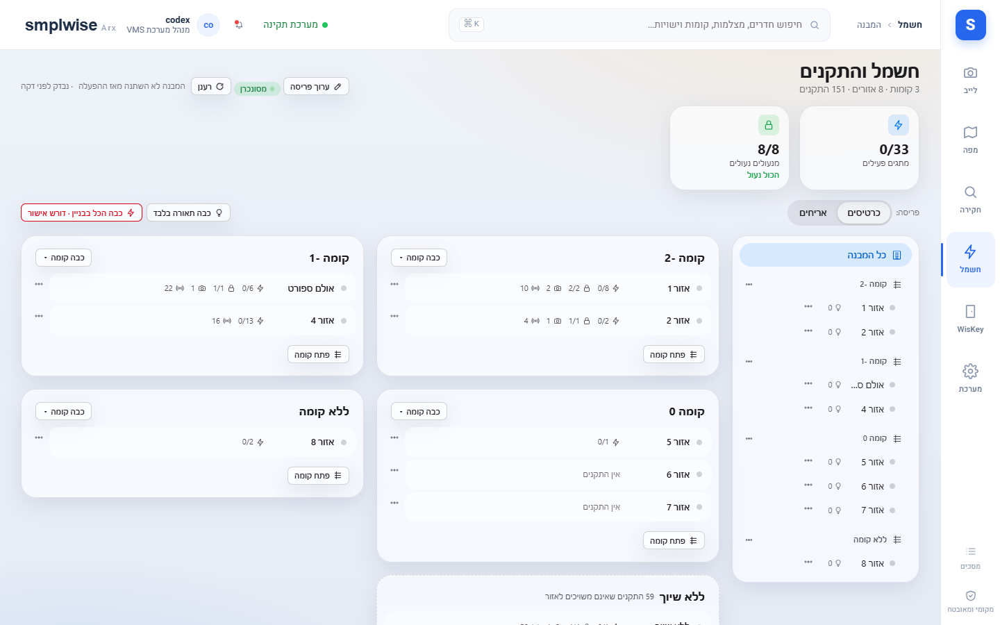
צילום מהמערכת החיה.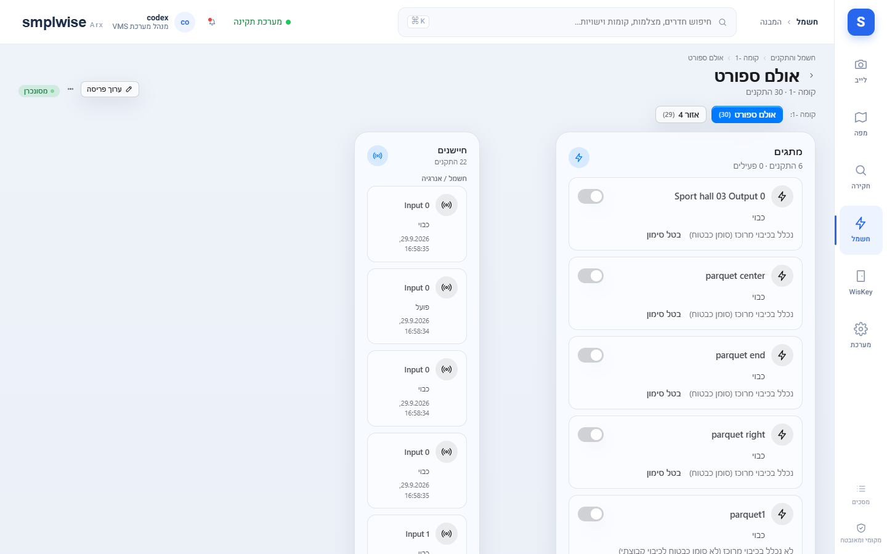
צילום מהמערכת החיה.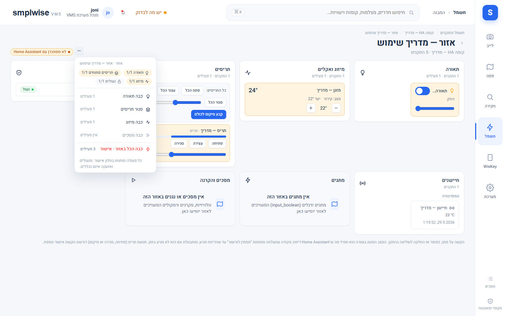
צילום מהמערכת החיה.אזור WisKey (בקרת כניסה)
מה זה
אזור WisKey מציג את מערכת בקרת הכניסה של הבניין (עמדות דלת, אינטרקום, כרטיסים ו-PIN). מאז החלטת הבעלים ב-28.09.2026, ברירת המחדל היא הטמעה (embed): שלוש מהלשוניות (מרכז הכניסה, פעילות, אנשים) יכולות להציג את פאנל ה-WisKey האמיתי שלכם מתוך תשתית המערכת, בדיוק כפי שהוא נראה שם — או, לחלופין, את מסך ה-SMPLWISE המקביל שנבנה במוצר. שאר לשוניות WisKey (עמדות, סנכרון, בריאות, יומן שינויים, ניהול) תמיד מוטמעות, כי SMPLWISE מעולם לא בנה מסכים משלו בשבילן. הבחירה נעשית בהגדרות ← בקרות כניסה, לכל לשונית בנפרד.
איך אני… (צופה — access.read)
- פותח את מרכז הכניסה, הפעילות או ספריית האנשים. אם ההגדרה למסך הזה היא "SMPLWISE" — רואים מסך שנבנה כאן (רשימת עמדות, תמונת עמדה מ-go2rtc, יומן פעילות עם סינון סטציה/אדם/תוצאה/דלת/טווח תאריכים, ספריית אנשים עם חיפוש). אם ההגדרה היא "WisKey" — נפתח הפאנל האמיתי בתוך מסגרת (frame), עם ההתחברות וההרשאות של חשבון המערכת שלכם.
- מבין למה משהו נראה אחרת בפאנל המוטמע. בפאנל המוטמע, תשתית המערכת מסתירה את סרגל הצד שלה סביב הפאנל כשגרסתה מאפשרת זאת (אחרת הוא נשאר גלוי עם הערה). המסגרת המוטמעת טוענת עותק שני של ממשק התשתית — היא איטית יותר ממסך SMPLWISE המקביל, במיוחד בטלפון.
- פותח בחלון מלא. "פתח בחלון מלא" פותח את אותו פאנל בלשונית נפרדת של הדפדפן.
איך אני… (מפעיל ומעלה — access.release, רגישה)
- משחרר דלת / עונה או דוחה שיחה / משמיע הכרזה — רק במסך "מרכז הכניסה" של SMPLWISE (בפאנל המוטמע, אלה פעולות WisKey עצמו, ראו למטה). הכפתורים "שחרור דלת", "מענה"/"דחייה"/"סיום שיחה", "הכרזה בעמדה" זמינים כאן. תוצאת הקריאה מדווחת כ"בוצע" (העמדה אישרה קבלה), "לא ידוע" (לא התקבל אישור), או שגיאה ספציפית (מנוע ההקראה נכשל, ההשמעה בעמדה נכשלה, ערוץ שמע תפוס).
איך אני… (מנהל אתר / מנהל מערכת — access.people.manage, רגישה)
- עורך אנשים. בעורך האדם: יוצרים/עורכים/מוחקים אדם, PIN, כרטיסים, חלון תוקף והקצאות עמדה. "יצירת PIN ייחודי אוטומטית" מציגה את ה-PIN פעם אחת בגלוי עם "העתק"; הוא מוסתר שוב מיד לאחר העתקה/הסתרה/שמירה/סגירה. יש לנקות את לוח ההעתקה (clipboard) אחרי מסירת PIN לאדם.
- **קולט כרטיס מהאינטרקום (
access.cards.capture, נדרשת גםaccess.people.manage).** בסעיף הכרטיסים: "קריאת כרטיס מהאינטרקום" מעביר את קורא עמדת הדלת הנבחרת למצב איסוף (פעולה פיזית בדלת שמתחילה רק אחרי אישור). כרטיס מוצג במסכה (•••• 1234— המספר המלא לעולם לא יוצא מ-WisKey), ורק "הוספת הכרטיס וסנכרון" מוסיף אותו לאדם ומבקש מ-WisKey לסנכרן לעמדות. מגבלות WisKey חלות: קליטה אחת לעמדה ושלוש בסך הכול, המתנה עד 30 שניות לכרטיס, סשן של 120 שניות. קליטה שייכת למי שהתחיל אותה בלבד. - בוחר, לכל לשונית (מרכז הכניסה / פעילות / אנשים), "WisKey (מוטמע)" או מסך SMPLWISE — בהגדרות ← בקרות כניסה (
40-devices_HE.mdוגם80-settings_HE.md). - מציג/מסתיר את כל אזור WisKey. מתג נפרד "הצג את WisKey במערכת" מסתיר את כל האזור לכולם ללא תלות בתפקיד (כמו הסתרת המפה); כתובת ישירה למסך WisKey כשהוא מוסתר מראה פאנל "מוסתר".
מה קורה בפאנל המוטמע (rc.19, contract v1)
- הפאנל נפתח דרך
?embed=1&tab=…&tool=…; WisKey מסתיר את הסרגל/כלים שלו ואת סרגל הצד של התשתית. הלשוניות והכלים ב-SMPLWISE (בשני העיצובים, כולל סרגל הטלפון) מגיעים **מקטלוגwiskey:readyשל הפאנל עצמו** — רק מה שהמשתמש הזה מורשה לראות. לחיצה על לשונית שולחתwiskey:navigate, וה"מעבר" קורה רק כש-wiskey:locationמאשר (דיאלוג "שינוי לא נשמר" שנדחה משאיר את המסך הישן; סשן נעול לא עונה והבקשה פגה אחרי 3 שניות). כתובת הדפדפן משקפת את המסך המאושר (wiskey_tab/wiskey_tool), כך שסימניות וקדימה/אחורה עובדים. - בתוך הפאנל המוטמע, המשתמש הוא בעל חשבון המערכת שלו — לא זהות SMPLWISE. משתמש שהחשבון שלו מחזיק
manageשל WisKey (או שהוא מנהל בתשתית המערכת) יכול לשחרר דלתות ולערוך אנשים בלי שלב האישור של SMPLWISE ובלי רישום ביומן הביקורת של SMPLWISE — רק יומן WisKey עצמו רושם זאת. - גרסאות ישנות יותר של WisKey (לפני rc.19) עדיין עובדות עם שיטה קודמת (deep-link ב-DOM); סימן הטמעה בלי handshake מציג "מתחבר…"; חוזה חדש מדי מציג "גרסה לא נתמכת".
אפליקציית הטלפון (0.1.123)
- בתוך האפליקציה לטלפון, שום דבר לא מוטמע — האפליקציה מזהה את עצמה (User-Agent + גשר native) ולפני שנפתחת מסגרת כלשהי. שם, מרכז הכניסה/פעילות/אנשים מציגים תמיד את מסכי SMPLWISE (גם כשההגדרה היא "WisKey"); שאר לשוניות WisKey מציגות הערה קצרה עם כפתור "פתח ב-WisKey" שמעביר את האפליקציה עצמה (לא מסגרת) לפאנל WisKey, בדיוק כפי שהאפליקציה מנווטת.
- הסיבה: בתוך האפליקציה, ההתחברות עוברת דרך הגשר הפנימי שלה רק בחלון העליון — ממשק מקונן בתוך מסגרת לעולם לא מקבל את ההתחברות הזו ותמיד יבקש כניסה מחדש.
- אותו דבר קורה בדפדפן רגיל אם תשתית המערכת מבקשת כניסה בתוך המסגרת המוטמעת (למשל התחברות בלי "השאר אותי מחובר") — מוצג "נדרשת כניסה".
שים לב
access.release(רגישה) מכסה את הפעולות הפיזיות בלבד — שחרור דלת, מענה/דחייה/ניתוק, הכרזות.access.people.manage(רגישה) פותחת את עורך האנשים. שתיהן מוענקות כברירת מחדל רק ל-site_admin ו-system_admin; כדי לתת לאדם ספציפי רק את עריכת האנשים בלי כל תפקיד מנהל אתר — בונים תפקיד מותאם אישית (81-roles_HE.md).- כל שמירה בעורך האנשים דרך SMPLWISE מבוקרת תחת משתמש ה-SMPLWISE (שמות שדות וספירות בלבד — לעולם לא PIN, מספר כרטיס או טלפון).
- קליטת כרטיס לא אומתה עדיין מול עמדה פיזית אמיתית (רק מול קוד מקור ו-fixture) — השימוש האמיתי הראשון הוא הבדיקה החיה; יש לבצע אותה עם מישהו בדלת ולבדוק גם את הדלת וגם את הקורא.
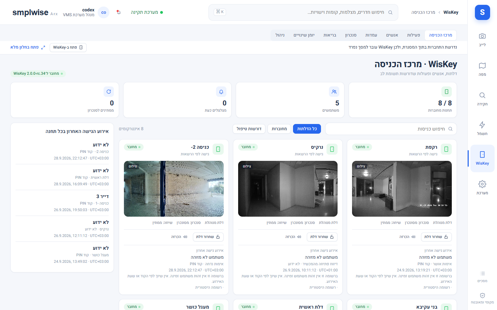
צילום מהמערכת החיה.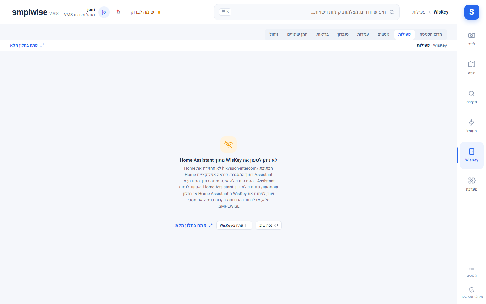
צילום מהמערכת החיה.צילום מהמערכת החיה.
גיבוי ושחזור, ואחסון
מה זה
הגדרות ← גיבוי ושחזור שומרת גיבויי פרויקט (לא וידאו) בתוך ה-add-on; מערכת ← אחסון מציגה שני דברים נפרדים: מה שנקרא מה-NVR עצמו (דיסקים, תוכנית הקלטה, שמירה — קריאה בלבד, אין כאן format/ RAID/מחיקה) ואנליטיקת השימוש של ההתקנה עצמה. שני האזורים דורשים מנהל מערכת (system.configure).
איך אני… (גיבוי ושחזור)
- יוצר גיבוי ידני. "צור גיבוי" (עם הערה אופציונלית) כותב zip תחת
/data/backups: אתרים, מבנים, קומות, קובצי תוכנית וגרסאות, סיכות, מצלמות, חדרים ואזורים, הגדרות; משתמשים והרשאות נכללים אך משוחזרים רק לפי בחירה. גיבויים לעולם אינם מכילים אישורי NVR/HA (אלה נשארים באפשרויות ה-add-on) ולעולם לא וידאו, תמונות ממוזערות של אירועים או ראיות מיובאות. - סומך על הגיבוי האוטומטי. עותק אחד נכתב לפני כל שדרוג גרסה (חמשת האחרונים נשמרים) ואחד ביום (שבעת האחרונים). כל השורה הזו כלולה גם בגיבוי המלא של Home Assistant, כי ה-add-on מוגדר
backup: hotו-/data(כולל תיקיית הגיבויים) חי שם. - מוריד או מעלה קובץ גיבוי. "הורד" שומר zip למחשב; "העלאת גיבוי" טוענת zip שהורד מכאן — גם מהתקנה אחרת — לרשימה, ומשם אפשר "שחזר".
- משחזר. בוחרים אופן שחזור: החלפה (מחליפה את כל נתוני הפרויקט הנוכחיים במה שבגיבוי) או מיזוג (רק פריטים שחסרים היום מתווספים; הקיימים נשארים). מתג נפרד "כולל משתמשים והרשאות" — ברירת המחדל היא נתוני פרויקט בלבד; ההרשאות של המשתמש שמבצע את השחזור נשמרות בכל מקרה, כך שאתם לא ננעלים בחוץ. לאישור מקלידים RESTORE בדיוק. דוח השחזור שמופיע אחרי כן מפרט: מה בוצע (החלפה/מיזוג), כמה שורות בכל טבלה, כמה קובצי תוכנית שוחזרו, וכמה שורות "לא בטוחות" דולגו (למשל שורת עורות-קומה עם מזהה קומה שאינו קיים עוד — נספרות, לא נדרסות בשקט).
- גיבוי שאינו תואם גרסה. גיבוי שמגרסת סכימה חדשה יותר מההתקנה הנוכחית נדחה עם הודעה לעדכן את ה-add-on קודם. גיבוי ישן יותר משוחזר כרגיל לתוך הסכימה הנוכחית — שדות/טבלאות חדשות שהגיבוי לא הכיר פשוט לא נוגעות; אין צורך "להריץ migration" ידנית.
- חוזר אחורה אחרי שדרוג כושל (Rollback). מתקינים את הגרסה הקודמת דרך Home Assistant, ואז משחזרים את הגיבוי "לפני עדכון" עם החלפה.
- מוחק גיבוי ישן מהרשימה כשאין בו יותר צורך.
איך אני… (מה בטוח בשחזור)
- קורא את הערת אבטחת הסקינים. קבצי תמונות הבקרה/הרינדורים של Plan Studio 3D (
skins.*) **מוגבלים תמיד לתיקייתdata/skins** — גם שורת מסד נתונים מורעלת וגם ארכיון גיבוי מבויים לא יכולים "לברוח" מהתיקייה הזו; מזהי קומה מאומתים, ושחזור גיבוי מדלג על שורות קומה לא בטוחות ומדווח את המספר בדוח (סעיף 4). חילוץfiles/בתוך הארכיון דוחה.., נתיבים מוחלטים, backslash ואות כונן — לא רק לוכסן קדמי. - יודע מה לא חוזר בשחזור. קבצים שהם עותקים נגזרים ולא חלק מהפרויקט המקורי — ראיות מיובאות מתיקי חקירה (
/data/imported/...) ותצוגות מקדימות של אירועים (/data/thumbs) — אינם נכללים בגיבוי, גם לא בשחזור: תיק שיובא לפני הגיבוי חוזר עם הפריטים שלו מסומנים "חסר" בדיסק, וניסיון לייבא את אותה חבילה שוב עדיין נחסם עד שהתיק ההוא נמחק.
איך אני… (אחסון — מה-NVR)
- בודק שמירת הקלטה. מערכת ← אחסון קוראת מה-NVR בלבד: דיסקים ומקום פנוי, תוכנית הקלטה לכל מצלמה (רציף/תנועה, ימים, קצב סיביות ורזולוציה) ותקופת שמירה. "נמדד" הוא ההקלטה הישנה ביותר שנמצאה בפועל (חיפוש עד 120 יום אחורה); "אומדן" הוא חישוב קיבולת מהקצבים המוגדרים כאילו הכול מקליט ברציפות — מצלמות מבוססות-תנועה שומרות בפועל יותר. הדוח במטמון 10 דקות; "רענון מול ה-NVR" שואל שוב. שום דבר במסך הזה אינו כותב להתקן.
- צופה באנליטיקת אחסון (Beta, נתוני הדגמה כרגע). תחזית שימוש (נמדד עד קו מסוים, אומדן אחריו — לא תחזית פשוטה של "דיסק מתמלא"), פילוח לפי מצלמה לפני retention, ומדיניות ההקלטה. המסך מסומן Beta עם נתוני הדגמה משום שהוא עדיין לא מחובר לחלוטין ל-backend החי בכל הסביבות — לבדוק תמיד מול הכרטיסים ב-#10 לנתון אמיתי.
- בודק את אחסון ה-add-on עצמו (
/data): הגדרות ← בריאות ועבודות מציגה את השימוש שה-add-on צורך (מסד נתונים, קובצי תוכנית, גיבויים, תמונות ממוזערות עד 200MB, וראיות מיובאות בנפרד), לצד הגיבוי האחרון. מכסת ייצוא (exports.max_mb, ברירת מחדל 2048MB לכל משימה) ותקופת שמירת ייצוא (exports.retention_days) נקבעות בהגדרות ← וידאו ומדיה. הגדרת מוצר נוספת,storage.min_free_mb(ברירת מחדל 1024MB), שומרת רזרבת מקום פנוי חובה על/data— פעולה שהייתה משאירה פחות מזה (כמו ייבוא חבילת ראיות גדולה) נדחית מראש במקום להסתכן במסד נתונים שנתקע כשהדיסק מתמלא.
שים לב
- כל יצירה, מחיקה ושחזור של גיבוי נכתבים ביומן הביקורת; המנהל שמבצע שחזור שומר על הגישה שלו גם כשבוחרים "החלפה" עם היקף הרשאות.
- אין כאן "שחזור חלקי בעצמכם" — היחידה היא כל הפרויקט (או כל הפרויקט + הרשאות). לשחזור פריט בודד (למשל תוכנית קומה אחת) יש להשתמש בהיסטוריית הגרסאות של עורך התוכנית (
21-plan-studio_HE.md), לא בגיבוי. - הגיבוי המקומי אינו תחליף לגיבוי HA
backup: hot(למקרה של אובדן דיסק שלם) — שניהם פועלים יחד.
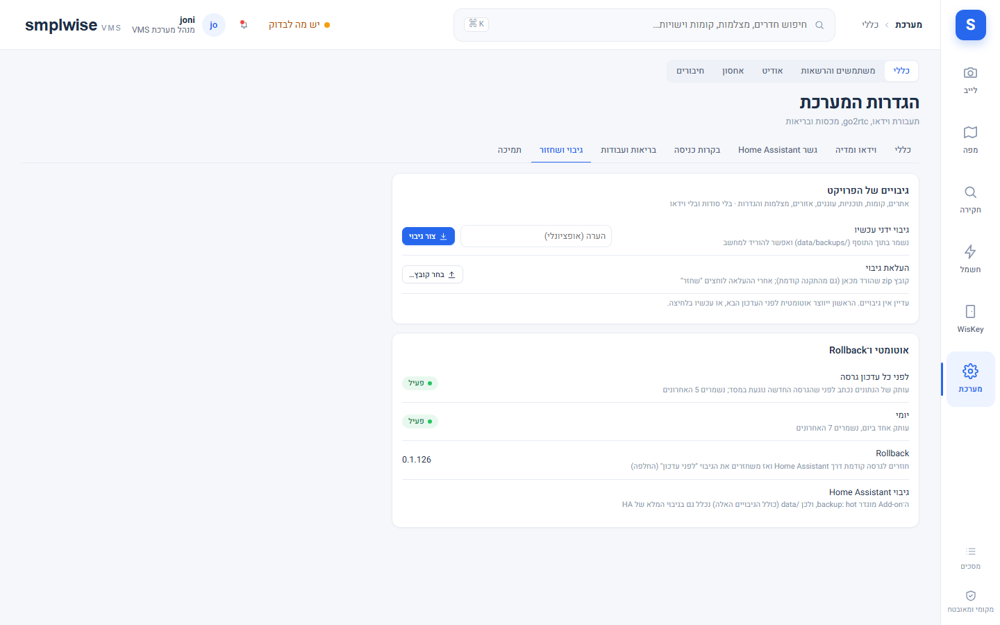
צילום מהמערכת החיה.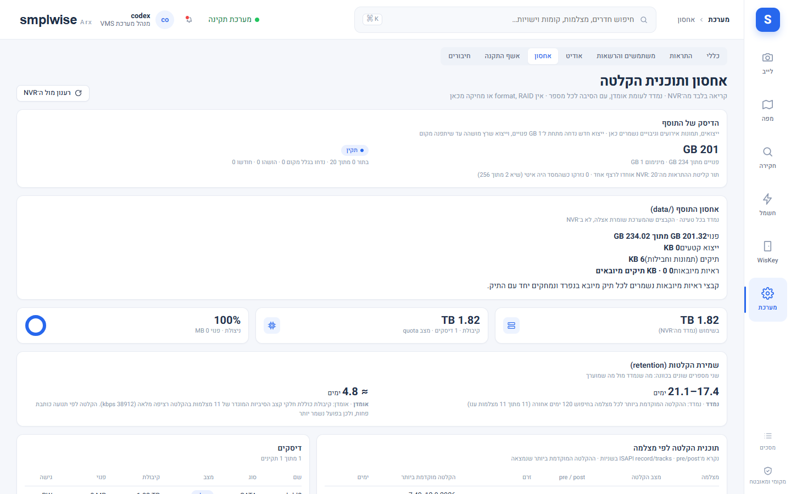
צילום מהמערכת החיה.התקנה ראשונית — אשף ההתקנה
מה זה
שני חלקים:
- הגדרת החיבורים קורית בלשונית "Configuration" של ה-add-on ב-Home Assistant, שדה-שדה (למטה).
- אשף ההתקנה במוצר — הגדרות ← אשף התקנה (
#/system/wizard, למנהלי מערכת בלבד) — בודק שההתקנה באמת עובדת, בשישה שלבים: התקנה ← NVR ← Home Assistant ← go2rtc ← קומה ← מצלמה. לכל שלב הוא מציג מצב (הושלם / לביצוע / נכשל / ממתין לשלב קודם), את העובדות שנבדקו, ואם השלב לא הושלם — מה הבעיה, מה עושים וקישור למסך שמתקן אותה. האשף עצמו לא משנה דבר ב-NVR, ב-go2rtc או ב-Home Assistant: הוא רק קורא.
הגדרות ← חיבורים (#/system/setup) נשאר המסך עם העובדות המפורטות על כל חיבור, עריכת פרטי ה-NVR והכתיבות המאושרות ל-NVR; האשף מקשר אליו כשצריך.
איך אני… (מנהל מערכת) — לפני ההפעלה הראשונה
- מוסיף את המאגר ומתקין. הגדרות ← אפליקציות ← חנות האפליקציות ← ⋮ ← מאגרים ← מדביקים את כתובת המאגר ← הוספה, ואז מתקינים SmplWise Arx (ה-Supervisor בונה את התמונה מקומית, כמה דקות בהתקנה הראשונה).
- ממלאים את לשונית Configuration, שדה־שדה (
smplwise_vms/config.yaml): | שדה | חובה? | מה הוא עושה | |---|---|---| |bootstrap_admin_username| לא (אך בלעדיו אין למי להקצות תפקידים) | ה-username (לא שם תצוגה) של HA שהופך למנהל מערכת בביקור הראשון שלו; ניתן להשאיר ריק כדי לנסות רק את המפות | |nvr_host,nvr_http_port,nvr_rtsp_port,nvr_username,nvr_password| לא, אך בלעדיהם אין מצלמות | גישת ISAPI לקריאה בלבד (סנכרון מצלמות, תצוגות מקדימות); פורט ה-RTSP הוא זה ש-go2rtc מושך ממנו וידאו. מומלץ חשבון NVR ייעודי שאינו מנהל — ה-add-on לעולם אינו כותב הגדרות NVR מעבר לשתי הפעולות המפורשות שדורשות הרשאה נפרדת (ראו95-troubleshooting_HE.md) | |go2rtc_url(+go2rtc_api_username/passwordאופציונלי) | לא, אך בלעדיו אין וידאו חי | כתובת ה-API של add-on go2rtc (למשלhttp://<ha-host>:1984); רק זרמיsmplwise_*נוצרים, זרמים אחרים לעולם לא נוגעים | |wiskey_username,wiskey_password| לא | חשבון RTSP משותף לעמדות WisKey (תצוגה מקדימה); עמדה עם חשבון שונה מקבלת override נפרד בהגדרות ← חיבורים (מנהל מערכת בלבד) | |openai_api_key| לא | מפתח OpenAI לעורות קומה מרונדרות ב-AI — ראוdocs/operations/OPENAI_ACCOUNT_SETUP_HE.mdלהסבר המלא (מנוי ChatGPT אינו מספיק, צריך חשבון API נפרד עם אמצעי תשלום) | |log_level| לא |debug/info/warning/error;debugלפרטי בקשה, לעולם לא מדפיס סודות |
- מפעילים ופותחים את ה-add-on מסרגל הצד. אחרי מילוי פרטי ה-NVR, מצלמות מתגלות לבד תוך דקה (גילוי בהפעלה וכל 10 דקות); הגדרות ← וידאו ומדיה ← "סנכרון זרמים" (
system.configure) פותחת את זרמי go2rtc לראשונה. אם הרשימה ריקה — לבדוק את יומן ה-add-on ואת/api/v1/health(discovery.cameras_last_error).
איך אני… (מנהל מערכת) — גשר Home Assistant
- מתקין את SMPLWISE Bridge פעם אחת. בהגדרות ← גשר Home Assistant, "התקנת הגשר (פעם אחת)" מעתיק את
custom_components/smplwise_bridgeל-config של HA ומכריז עליו ל-Supervisor. יש להפעיל מחדש את Home Assistant פעם אחת כדי שהרכיב ייטען, ואז לאשר "SMPLWISE Bridge" תחת Settings ← Devices & services (קוד הזיווג כבר ממולא). בלי מיפויhomeassistant_config, המסלול הידני נשאר: להעתיק את התיקייה בעצמכם או להוסיף כמאגר HACS. חשוב: בכל פעם שהגשר עצמו מתעדכן לגרסה חדשה (למשל כשגרסת ה-add-on מוסיפה שירותי HA נתמכים) יש להפעיל מחדש את Home Assistant שוב — עד אז השירותים החדשים נעניםservice_not_allowed/"השירות אינו מורשה", וזה לא באג. לשונית ההגדרות מציגה את מצב הגשר (ממתין ל-Restart / פעיל / עדכון ממתין) בכל עת.
איך אני… (מנהל מערכת) — עובר על אשף ההתקנה
- פותח את הגדרות ← אשף התקנה. בראש המסך שורת שלבים (ירוק = הושלם, אדום = נכשל, כתום = לביצוע) וסיכום "n מתוך 6 שלבים הושלמו · השלב הבא". בפתיחה האשף בודק מול המכשירים כל שלב שידוע רק מעבודות הרקע של ה-add-on (השורה מתחת לכותרת השלב אומרת "נבדק מול המכשיר", "לפי עבודות הרקע" או "לפי בסיס הנתונים").
- מטפל בשלב הראשון שלא הושלם. בכרטיס השלב: הבעיה במשפט אחד, "מה עושים:" עם הפעולה עצמה, וקישור למסך המתקן. אחרי התיקון — "בדוק שוב" באותו שלב (אפשר פעם ב-5 שניות לכל שלב; אם מוקדם מדי, המסך אומר כמה לחכות). "בדוק הכול" בודק את כל השלבים. | שלב | מה נבדק | כשזה נכשל — הדוגמה הנפוצה | |---|---|---| | 1. התקנת ה-Add-on | בסיס הנתונים,
/data(כתיבה ושטח פנוי), מנהלי מערכת, אזור הזמן | דיסק מלא ← לפנות ייצואים וגיבויים ישנים (הגדרות ← אחסון) | | 2. חיבור ל-NVR | דגם וקושחה, רשימת הערוצים והזרמים (ראשי ומשני), פרופילי הווידאו, שעון ה-NVR מול ה-add-on, שעון קיץ | "ה־NVR לא ענה" ← לבדוק שהוא דולק ושהכתובת והפורט נכונים (הגדרות ← חיבורים); "דחה את שם המשתמש או הסיסמה"; סטיית שעון מעל 30 שנ׳ ← NTP או "סנכרן לשעון השרת"; היסט UTC שגוי ← אזור הזמן/שעון הקיץ בהגדרות ה-NVR | | 3. Home Assistant והגשר | החיבור ל-HA, גרסת HA, מצב SMPLWISE Bridge וצימודו, הפעלה מחדש ממתינה, שעון HA ואזור הזמן שלו | "עוד לא נטענה" ← להפעיל מחדש את Home Assistant; "עוד לא צומד" ← לאשר את SMPLWISE Bridge ב-Devices & services | | 4. go2rtc | גרסה, זרמיsmplwise_מול הזרמים שהמצלמות צריכות (זרמים של מוצרים אחרים רק נספרים) | "go2rtc לא ענה" ←go2rtc_url; "אין אף זרם smplwise_" ← "סנכרון זרמים" (הגדרות ← כללי ← וידאו ומדיה) | | 5. קומה ותוכנית | אתר, מבנה, קומה ותוכנית מפורסמת | "אין תוכנית" / "טיוטה שלא פורסמה" ← הקישור פותח את ייבוא התוכנית של אותה קומה | | 6. מצלמה על המפה | מצלמות רשומות, מוצבות על תוכנית, עם פרופיל זרם ידוע | "אף מצלמה עוד לא מוצבת" ← הקישור פותח את עורך התוכנית |
- מסיים כשמופיע "מוכן לעבודה". כל ששת השלבים עברו; משם קישורים ישירים לכל המצלמות, למפה ולאירועים. עד אז מנהל מערכת רואה מעל כל מסך את השורה "השלם את ההתקנה · n מתוך 6 שלבים הושלמו" עם קישור לאשף; × מסתיר אותה עד סוף הסשן בדפדפן.
ספי השעון: עד 2 שניות סטייה — תקין; עד 30 — אזהרה (השלב עובר); מעבר לזה — השלב נכשל. שעון קיץ נבדק לפי אזור הזמן של ההתקנה (הגדרות ← כללי ← וידאו ומדיה, "אזור זמן של האתר וה־NVR").
מצב ללא NVR (חשמל בלבד)
התקנה שמשמשת רק לשליטה בחשמל ובהתקנים עובדת בלי NVR: משאירים את nvr_host (ואת nvr_username / nvr_password) ריקים ב־Configuration. במצב הזה האשף מסמן את שלבי NVR ומצלמה "דילוג - מצב ללא NVR" (לא "נכשל"), ואת go2rtc כרשות כל עוד אינו מוגדר (הוא נדרש רק לווידאו של עמדות WisKey). "מוכן לעבודה" מופיע כשהשלבים הנותרים הושלמו - התקנה, Home Assistant, קומה (ו־go2rtc אם הוגדר). מסכי המצלמות, האירועים וההקלטות מוסתרים מהניווט לכולם; המפה, חשמל והתקנים ו־WisKey עובדים כרגיל. כדי להוסיף NVR בהמשך ממלאים את שלושת השדות ומפעילים מחדש את ה־Add-on - בלי הסבת נתונים. פירוט: smplwise_vms/DOCS_HE.md, "מצב ללא NVR".
שים לב
- קישור המפתח ל-OpenAI מוסבר בפירוט (מנוי מול API, חיוב, תקציב, ביטול) ב-
docs/operations/OPENAI_ACCOUNT_SETUP_HE.md. - אחרי כל שדרוג גרסה — או כל שינוי בהגדרות NVR/go2rtc/WisKey — לבדוק את הגדרות ← בריאות ועבודות לפני שמדווחים על תקלה; רשימת בדיקה מוכנה למעבדה:
docs/operations/LAB_CHECKLIST_2026-09-29_HE.md. - אף שדה סוד (סיסמה, מפתח API) לא מוצג שוב אחרי שמירה — רק "מוגדר: כן/לא".
- האשף לא מחליף את הגדרות ← בריאות ועבודות: הוא עונה על "האם ההתקנה שלמה", ומסך הבריאות על "מה קורה עכשיו".
- בדיקה מול מכשיר מוצגת 10 דקות; אחר כך האשף חוזר להציג את מה שעבודות הרקע יודעות, עד ה"בדוק שוב" הבא. כל בדיקה נרשמת ביומן הביקורת (
setup.check).
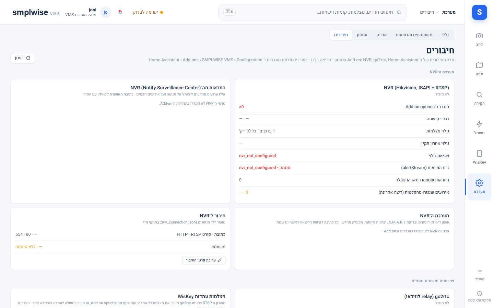
*צילום מהדגמה (NVR ו-go2rtc מדומים,frontend/tests/fixtures/setup_fake_devices.py) — מדגים שלב שנכשל; במערכת החיה כל השלבים הושלמו.*
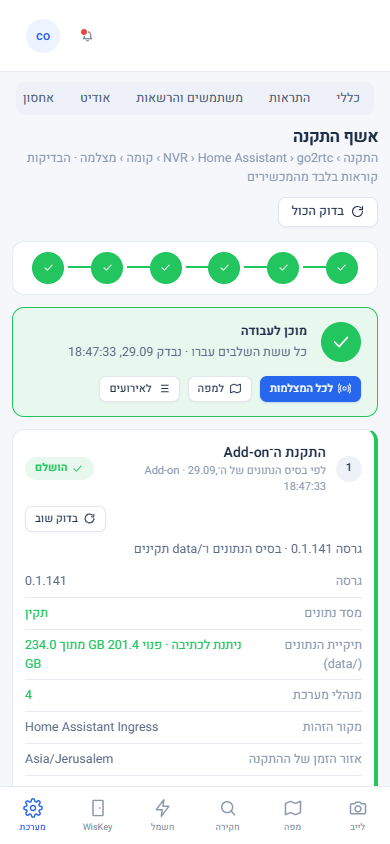
צילום מהמערכת החיה.הגדרות
מה זה
מסך ההגדרות (מערכת ← הגדרות) מרכז את כל מה שקובע איך המוצר מתנהג להתקנה כולה: וידאו, גשר Home Assistant, בקרות כניסה, חשמל והתקנים, בריאות, גיבוי ותמיכה. **כל שינוי דורש system.configure (בפועל: תפקיד מנהל מערכת**) ונכתב ליומן הביקורת (settings.update, עם הערכים החדשים בלבד — לא סודות). מי שאין לו את ההרשאה רואה את הלשוניות שהוא רשאי לצפות בהן, ללא אפשרות לשמור. שדות שמקורם בקובץ אפשרויות ה-add-on (למשל openai_api_key, פרטי NVR) אינם בהגדרות המוצר — הם נערכים בלשונית Configuration של ה-add-on עצמו ב-Home Assistant, ומוצגים כאן רק כ"מוגדר/לא מוגדר".
הטבלאות שלמטה מבוססות על smplwise_vms/backend/smplwise/routers/settings.py (מקור האמת לערכי ברירת המחדל וטווחי הקלט) ועל smplwise_vms/DOCS_HE.md.
לשונית "כללי"
| שדה | משמעות | ברירת מחדל | מי רשאי לשנות | אודיט | |
|---|---|---|---|---|---|
עיצוב הממשק (ui.design) | SW A (סרגל אייקונים + breadcrumbs) או SW B (לוחות קודמים); כל דפדפן יכול לשמור בחירה משלו; `?design=a\ | b` בכתובת כופה עיצוב | a | מנהל מערכת | כן |
שמות העיצובים (ui.design_names) | תווית תצוגה לכל אחד מהעיצובים, עד 24 תווים | {"a":"SW A","b":"SW B"} | מנהל מערכת | כן | |
אזור זמן לתצוגה (time.zone) | אזור IANA שאליו מתורגמים כל הזמנים (חיפוש הקלטות, אירועים); פנימית הכול UTC | Asia/Jerusalem | מנהל מערכת | כן | |
| התראת אחסון נמוך | אזהרה כשנשאר פחות מ-10% פנוי ב-NVR (קריאה בלבד מה-NVR) | פעיל | תצוגה בלבד | — | |
| go2rtc / גשר HA | קיצורים ללשוניות "וידאו ומדיה" ו-"גשר Home Assistant" | — | — | — | |
| בריאות המערכת | תקציר מצב, עם קישור ל"בריאות ועבודות" | — | — | — |
לשונית "וידאו ומדיה"
| שדה | משמעות | ברירת מחדל | טווח | מי רשאי לשנות |
|---|---|---|---|---|
תעבורה ברירת מחדל (media.transport_default) | mse עובד דרך Ingress/Cloudflare/CGNAT; webrtc השהיה נמוכה אך דורש UDP ישיר; auto מנסה WebRTC ונופל ל-MSE | mse | mse / auto / webrtc | מנהל מערכת |
פרופיל לקיר המצלמות (media.wall_profile) | משני (sub) חוסך CPU ורוחב פס; ראשי (main) לתצוגה בודדת | sub | sub / main | מנהל מערכת |
מקסימום זרמים חיים במקביל (media.max_live_sessions) | הגנה על ה-NVR; מעל המכסה — צילום בלבד | 8 | 1–32 | מנהל מערכת |
רעננות צילום (snapshots.max_age_s) | תדירות עדכון תמונת ISAPI לאריחים | 60 שניות | 5–3600 | מנהל מערכת |
מצלמות בקיר כברירת מחדל (ui.wall_count) | נקודת פתיחה; כל דפדפן זוכר בחירה אחרונה | 4 | 1–32 | מנהל מערכת |
פריסת קיוסק כברירת מחדל (ui.kiosk_cols/ui.kiosk_rows) | עמודות×שורות; קישור קיוסק עם cols/rows גובר | 3×2 | 1–6 / 1–5 | מנהל מערכת |
מסך פתיחה (ui.start_route) | המסך שנפתח כשהכתובת לא מציינת מסך | מפת קומה (explore) | explore/live/wall/events/playback | מנהל מערכת |
הסתרת המפה (ui.hide_map) | מסיר את אזור המפה מהניווט לכולם | מוצגת | true/false | מנהל מערכת |
HA recorder כמקור משני (history.ha_secondary) | במפה ההיסטורית: מקור גיבוי כשההיסטוריה המקומית לא יודעת מצב | כבוי | true/false | מנהל מערכת |
מידות לפני כיול (plan.estimates) | הצגת ≈ עד כיול, או הסתרת מטרים | משוערות (≈) | true/false | מנהל מערכת |
מפלסים בפתיחת מפה (plan.levels) | כל המפלסים יחד, או רק ברירת המחדל של הקומה | כל המפלסים | all/default | מנהל מערכת |
רמת איכות בתלת-ממד (plan.quality) | ברירת מחדל להתקנה; דפדפן יכול לדרוס, מכשיר איטי יורד לבד | מלאה (2) | 1/2 | מנהל מערכת |
דעיכת סימון תנועה (plan.presence_fade) | דקות עד שגוון "נוכחות" בתלת-ממד דועך; כבוי = רק בזמן תנועה | 3 דקות | off / 1–120 | מנהל מערכת |
הסתרת חיפוש AI (ui.hide_search) | מסיר לשונית מהניווט; המסך עדיין זמין בכתובת | מוצג | true/false | מנהל מערכת |
סשני ניגון במקביל (playback.max_sessions) | כל ניגון = זרם playback אחד מה-NVR | 4 | 1–16 | מנהל מערכת |
פקיעת סשן ניגון (playback.lease_s) | שניות ללא פעילות עד מחיקת הזרם | 600 | 60–3600 | מנהל מערכת |
גודל ייצוא מקסימלי (exports.max_mb) | לפי נפח משוער של קבצי NVR בטווח | 2048 MB | 50–20480 | מנהל מערכת |
שמירת קבצי ייצוא (exports.retention_days) | מחיקה אוטומטית לאחר התקופה | 7 ימים | 1–365 | מנהל מערכת |
שמירת אירועים (events.retention_days) | מחיקת אירועים ישנים מהמאגר המקומי | 30 ימים | 1–3650 | מנהל מערכת |
שמירת אודיט (audit.retention_days) | מחיקת שורות ביקורת ישנות | 365 ימים | 30–3650 | מנהל מערכת |
סקינים מרונדרים (AI) — ספק ומודל (skins.provider/skins.model) | ספק תמונה חיצוני לעיבוד קומה פוטו-ריאליסטי | openai / gpt-image-1.5 | — | מנהל מערכת |
סקינים — אישור פרטיות (skins.privacy_ack) | כל עוד כבוי, שום דבר לא נשלח, גם לא בדיקת חיבור | כבוי | true/false | מנהל מערכת |
סקינים — רינדורים לקומה (skins.budget_renders_per_floor) | לכל קומה וגרסת מבנה | 4 | 0–6 | מנהל מערכת |
סקינים — רינדורים בחודש (skins.budget_monthly) | לכל ההתקנה, לחודש קלנדרי, כולל בדיקות חיבור | 20 | 0–500 | מנהל מערכת |
| go2rtc — סנכרון זרמים | פותח לראשונה זרמי smplwise_* ב-go2rtc; זרמים זרים לא נגועים | — | system.configure | כן |
לשונית "גשר Home Assistant"
| מה מוצג | משמעות |
|---|---|
| חיבור ל-Home Assistant | האם SUPERVISOR_TOKEN הוגדר; בלעדיו אין גישה ל-API של HA |
| גשר SMPLWISE (אינטגרציה ב-Home Assistant) | סטטוס: לא הותקנה / ממתינה ל-Restart / פעילה / עדכון ממתין / שגיאה / לא זמין |
| כתובת + קוד זיווג | להעתקה כשמתקינים את האינטגרציה ידנית (HACS) |
| "התקנת הגשר (פעם אחת)" | מעתיק את custom_components/smplwise_bridge ל-config של HA ומכריז עליה; דורש הפעלה מחדש אחת של HA כדי שתיטען |
מי רשאי: מנהל מערכת בלבד רואה כתובת/קוד זיווג ולוחץ "התקנת האינטגרציה"; כל השאר תצוגה בלבד.
לשונית "בקרות כניסה"
| שדה | משמעות | ברירת מחדל | מי רשאי לשנות |
|---|---|---|---|
הצג את WisKey במערכת (ui.hide_wiskey) | הסתרת כל אזור WisKey מהניווט לכולם, ללא תלות בתפקיד | מוצג | מנהל מערכת |
מרכז הכניסה (access.ui.overview) | WisKey (מוטמע) או SMPLWISE | WisKey | מנהל מערכת |
פעילות (access.ui.events) | WisKey (מוטמע) או SMPLWISE | WisKey | מנהל מערכת |
אנשים (access.ui.people) | WisKey (מוטמע) או SMPLWISE | WisKey | מנהל מערכת |
הטמעה גם באפליקציית Companion (ניסיוני) (access.phone_embed) | מופעל: גם באפליקציית Home Assistant בטלפון WisKey מוטמע, ו־SMPLWISE מעביר את ההזדהות של האפליקציה ל־Home Assistant שבתוך המסגרת; אם ההזדהות לא מצליחה, המסך חוזר לבד למסך של SMPLWISE עם "פתח ב-WisKey". כבוי: באפליקציה אין מסגרת | כבוי | מנהל מערכת |
| שאר מסכי WisKey (עמדות, סנכרון, בריאות, יומן שינויים, ניהול) | תמיד מוטמעים — קבוע, לא ניתן לשינוי | WisKey (קבוע) | — |
ראו 50-wiskey_HE.md לגבי מה זה אומר בפועל (הרשאות WisKey עצמו חלות בפאנל המוטמע, לא הרשאות SMPLWISE).
לשונית "חשמל והתקנים"
| שדה | משמעות | ברירת מחדל | מי רשאי לשנות |
|---|---|---|---|
סגנון (devices.style) | SMPLWISE (מראה שאר המערכת) או זכוכית (משטחים שקופים ומטושטשים, מהמוקאפ שאושר) | SMPLWISE | מנהל מערכת |
ערכת צבע (devices.theme) | ברירת מחדל / חול / יער / גרפיט — פלטת swatches | ברירת מחדל | מנהל מערכת |
בהיר או כהה (devices.scheme) | לעולם לא כהה רק כי מערכת ההפעלה כהה — צריך בחירה מפורשת | בהיר | מנהל מערכת |
תצוגת הפתיחה של המבנה (devices.default_view) | כרטיסים (עץ+כרטיסי קומה) או אריחים; בחירה אישית של הצופה גוברת | כרטיסים | מנהל מערכת |
צפיפות (devices.density) | מרווחת / דחוסה (אריחים, שורות ורווחים קטנים יותר) | מרווחת | מנהל מערכת |
חיישנים (devices.show_sensors) | כרטיס חיישנים במסך אזור + מונה במסך מבנה | מוצג | מנהל מערכת |
רצועת המזגנים (devices.show_climate_strip) | מצב מזגנים בראש מסך מבנה/קומה | מוצגת | מנהל מערכת |
הפריסה עצמה (מיקום/גודל כרטיסים, כותרת, אייקון, צבע לפי תפקיד) נערכת ב"ערוך פריסה" במסך המבנה/ האזור עצמו — ראו 40-devices_HE.md, לא כאן.
לשונית "בריאות ועבודות"
מציגה כרטיס נפרד לכל תת-מערכת (NVR, go2rtc, גשר HA, קליטת אירועים, מאגר) עם סטטוס ירוק (עובד), ענבר (לא מוגדר/ממתין) או אדום (נכשל, עם הסיבה), בתוספת האחסון שה-add-on משתמש בו והגיבוי האחרון, ותור עבודות עם התקדמות. "בדוק עכשיו" בודק שוב את ה-NVR וה-go2rtc (בדיקות מכשירים נשמרות ל-TTL קצר; זרמים זרים ב-go2rtc לעולם לא נבדקים/נוגעים). תצוגה בלבד לכולם — אין כאן שדות לעריכה.
לשונית "גיבוי ושחזור"
| פעולה | משמעות | מי רשאי |
|---|---|---|
| "צור גיבוי" | כותב zip עם נתוני הפרויקט (אתרים/מבנים/קומות/תוכניות/גרסאות/סיכות/מצלמות/חדרים/אזורים/הגדרות; משתמשים והרשאות נכללים אך משוחזרים רק לפי דרישה); הערה אופציונלית | מנהל מערכת |
| גיבויים אוטומטיים | לפני כל שדרוג גרסה (5 אחרונים נשמרים) ואחד ביום (7 אחרונים) | אוטומטי |
| "שחזר" | טעינת גיבוי אחרי הקלדת RESTORE בדיוק; מצב החלפה (מחליף את נתוני הפרויקט הנוכחיים) או מיזוג (רק פריטים חסרים); היקף כולל גישה (משתמשים/הרשאות) הוא בחירה נפרדת | מנהל מערכת |
| העלאת קובץ גיבוי | מאפשר לשחזר מגיבוי שהורד למחשב או הגיע מהתקנה אחרת | מנהל מערכת |
| מחיקת גיבוי | מסיר קובץ גיבוי מהרשימה | מנהל מערכת |
גיבויים לעולם אינם מכילים אישורי NVR או HA (אלה נשארים באפשרויות ה-add-on) ולעולם לא וידאו. המנהל שמבצע שחזור שומר על הגישה שלו; השחזור עצמו מבוקר.
לשונית "תמיכה"
מציגה פרטי גרסה ומידע לתמיכה, ומאפשרת יצירת "חבילת תמיכה מצונזרת" (לוגים/מצב בלי סודות) לשליחה למפתחים.
שים לב
- שינוי
ai.providerל-externalנדחה תמיד — אין ספק ניתוח חיצוני מובנה, קיים רק חוזה המתאם; ניתן לבחור רקnoneאוlocal. - כל שינוי הגדרה (
PATCH /settings) נכתב ביומן הביקורת כ-settings.updateעם השדות שהשתנו בלבד — לעולם לא סודות (מפתחות API, אישורי NVR/WisKey/go2rtc). openai_api_key, פרטי חיבור NVR/go2rtc/WisKey — לא בהגדרות אלה; הם באפשרויות ה-add-on עצמו ב-Home Assistant (Configuration).
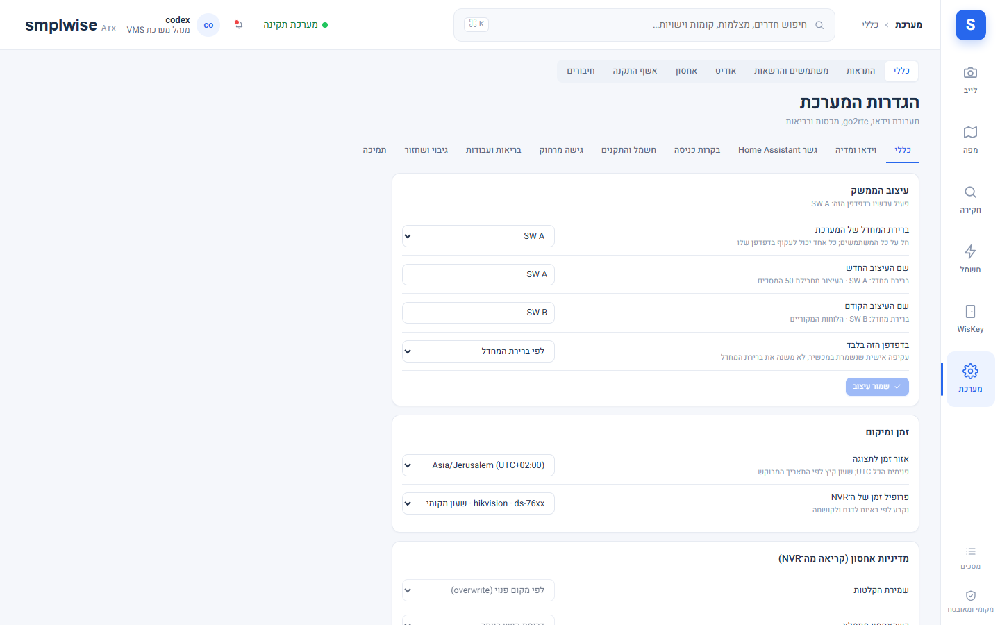
צילום מהמערכת החיה.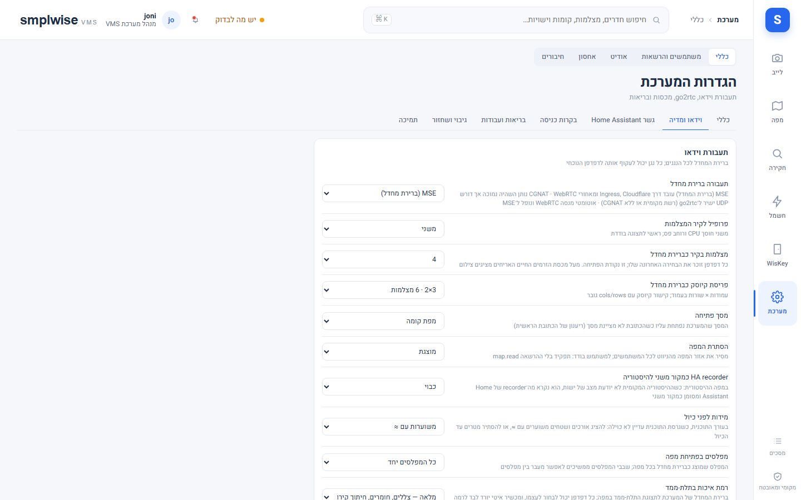
צילום מהמערכת החיה.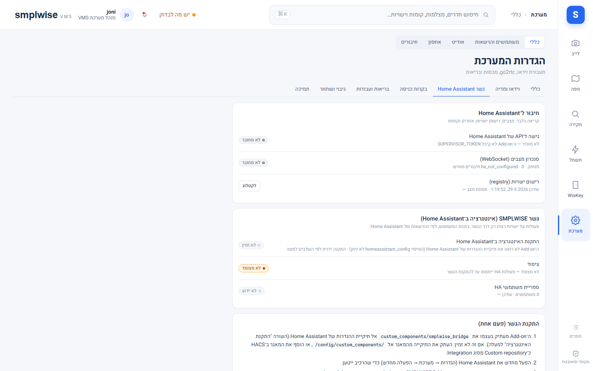
צילום מהמערכת החיה.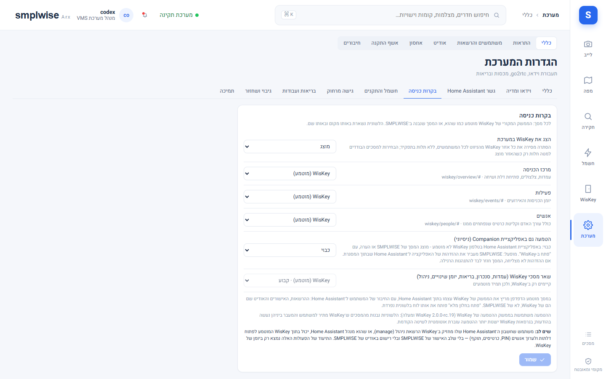
צילום מהמערכת החיה.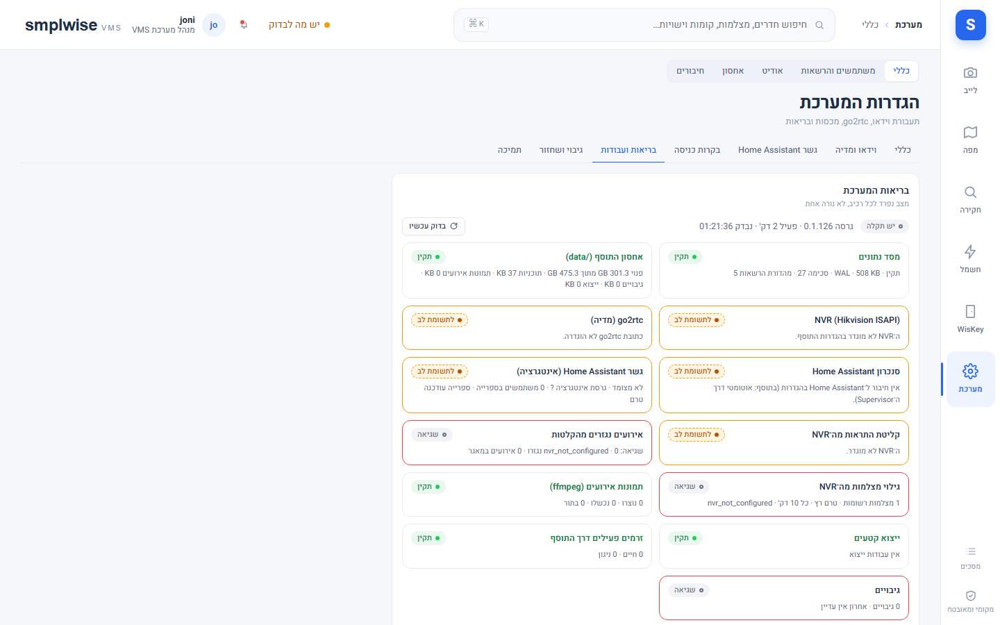
צילום מהמערכת החיה.צילום מהמערכת החיה.
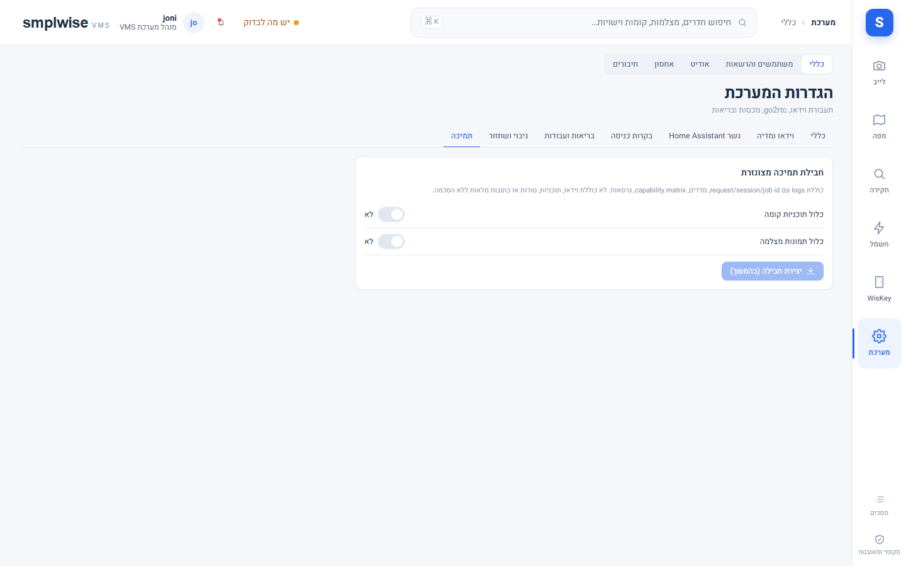
צילום מהמערכת החיה.משתמשים והרשאות
מה זה
מסך "משתמשים והרשאות" (מערכת ← משתמשים והרשאות) הוא מקום ניהול הזהות והתפקידים: חמש לשוניות — משתמשים, קבוצות, תפקידים, הרשאות אפקטיביות, אודיט הרשאות. משתמשים עצמם מגיעים רק מ-Home Assistant — אינטגרציית הגשר דוחפת את ספריית המשתמשים (id, שם, username, פעיל, דגל מנהל, קבוצות) כל דקה. איש לא נוצר כאן, אין סיסמאות כאן, ודגל "מנהל HA" מוצג כמידע בלבד ולא מקנה שום דבר במוצר.
איך אני… (מנהל מערכת / מנהל אתר — לשונית משתמשים)
- רואה את כל המשתמשים. טבלה עם שם, מצב (פעיל/מושבת ב-HA), מנהל HA (מידע בלבד — לא תפקיד VMS), סנכרון (מתי הספרייה עודכנה מ-HA לאחרונה), תפקיד/היקף.
- מסנכרן ידנית. "סנכרון משתמשים מ-HA" מבקש דחיפה מיידית מהאינטגרציה במקום לחכות לדקה הבאה.
- **משייך תפקיד (
rbac.assign).** בוחרים תפקיד + היקף (כל ההתקנה / אתר / מבנה / קומה) למשתמש או לקבוצת VMS. "שמור שיוך" כותב ומבוקר עם diff לפני/אחרי; "ביטול שיוך" מסיר. - מבין מה קורה כשמשתמש מושבת ב-HA. הגישה נלקחת בדחיפת הספרייה הבאה (עד 60 שניות): בקשות חדשות נדחות, שקעי live/playback פתוחים נסגרים תוך שניות, האודיט שומר את ה-id. מנהל VMS פעיל אחרון לעולם לא מוסר רק בגלל שדחיפה השמיטה אותו (last-admin guard).
איך אני… (קבוצות, T082)
- יוצר קבוצה ("קבוצה חדשה", למשל "עורכי קומה 2") ומוסיף לה חברים.
- משייך תפקיד לקבוצה שלמה — כל חבר יורש את השיוך; ההרשאה האפקטיבית של משתמש היא איחוד השיוכים שלו עצמו ושל כל הקבוצות שהוא חבר בהן.
- רואה תצוגה מקדימה של השפעה לפני שמירה — לכל שינוי שיוך/חברות, המערכת מציגה מראש איזה משתמשים מושפעים.
- מחיקת קבוצה נדחית כל עוד יש בה חברים או שיוכים.
איך אני… (האצלה למנהל אתר, T082)
- **מנהל אתר עם
rbac.assignמואצל יכול לשייך תפקידים בתוך האתר שלו בלבד, בכפוף לארבע מגבלות: (א) רק תפקידים ברשימת ההיתר של האצלה (נערכת בלשונית תפקידים; ברירת מחדל viewer/operator/editor/kiosk, בתוספת תפקידים מותאמים אישית שסומנו "ניתן להאצלה"); (ב) רק תפקידים שההרשאות שלהם הוא עצמו מחזיק באותו היקף; (ג) רק למשתמשים בודדים, לעולם לא לקבוצות; (ד) לעולם לא תפקיד עם הרשאת מערכת**. חריגה מכל אחת נדחית עם סיבה (role_not_delegable,delegation_escalation,delegation_groups) ומבוקרת. - דנייה (deny) על משתמש נשארת כלי של הרשאה מלאה בלבד — מנהל אתר מואצל לא יכול ליצור או להסיר deny.
- סמכות מלאה (הענקת
system_adminלדוגמה) דורשת גםrbac.assignוגםrbac.roles.manageברמת ההתקנה — לא מספיק להחזיק אחת מהן.
איך אני… (לשונית תפקידים, מנהל מערכת)
- בונה תפקיד מותאם אישית מהרשאות רגילות בתוספת הענקות רגישות שיש לסמן במפורש (למשל
door.unlock,alarm.disarm,access.people.manage,access.cards.capture,devices.control_bulk). תפקיד מותאם אישית לעולם לא נושא הרשאת מערכת (ניהול תצורה/תפקיד/ קישור); תפקידים מובנים (viewer/operator/editor/kiosk/site_admin/system_admin) אינם ניתנים לעריכה. - לפני שמירה, דיאלוג מציג את ההשפעה (קישורים, משתמשים, קבוצות, היקפים, הרשאות שנוספו/הוסרו). השינוי חל על כל סשן מושפע בבקשתו הבאה; עריכה מיושנת נדחית (revision); תפקיד שעדיין מקושר לא ניתן למחיקה.
- מסמנים תפקיד "ניתן להאצלה" כדי שמנהל אתר יוכל לשייך אותו בעצמו.
איך אני… (לשונית הרשאות אפקטיביות והרשאות מיוחדות בהיקף WisKey)
- "הרשאות אפקטיביות" מחשבת בצד השרת מה משתמש נתון באמת רשאי לעשות בהיקף נתון — בלי התחזות (impersonation), רק חישוב.
- הרשאות WisKey הרגישות:
access.read(viewer ומעלה) — צפייה בלבד;access.release(site_admin/system_admin) — שחרור דלת, מענה/דחייה/ניתוק, הכרזות;access.people.manage(site_admin/system_admin) — עורך האנשים;access.cards.capture(site_admin/system_admin, בנוסף ל-people.manage) — קליטת כרטיס. כדי לתת למישהו רק עריכת אנשים בלי כל תפקיד מנהל אתר — בונים תפקיד מותאם אישית שמפרט אתaccess.people.manageבין הרשאותיו הרגישות.
איך אני… (לשונית אודיט הרשאות)
- "יומן אודיט" (מערכת ← יומן אודיט) מציג שורה לכל פעולה מורשית/נדחית: זמן, משתמש, פעולה, משאב, החלטה (allowed/denied — כולל הסיבה), תפקיד/היקף ששימשו. שורות נשמרות
audit.retention_days(ברירת מחדל 365 יום).
שים לב
- כל שינוי שיוך, קבוצה או תפקיד מקדם גרסת הרשאה (revision) ונכנס לתוקף מיד; עריכה על גרסה מיושנת נדחית, לא דורסת בשקט.
- כל שינוי שיוך/חברות בבאצ' (
POST /access/bindings/bulk, עד 50 פריטים) הוא all-or-nothing — הפריט הראשון שנדחה עוצר את כל הבקשה עם האינדקס וה-id שלו. - אף כתיבת שיוך/חברות לא יכולה להשאיר את ההתקנה בלי מנהל מערכת פעיל אחד לפחות (409
last_admin), כולל deny על עצמך. - הרשאות אמיתיות תמיד נבדקות בצד השרת על המשאב עצמו — מצלמה נגישה רק דרך קומה שהמשתמש רשאי לראות, ומניעה מפורשת בקומה סופית אפילו למשתמש כל-ההתקנה.
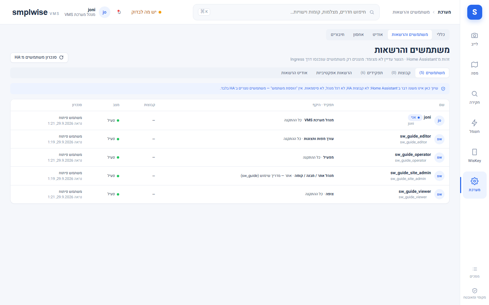
צילום מהמערכת החיה.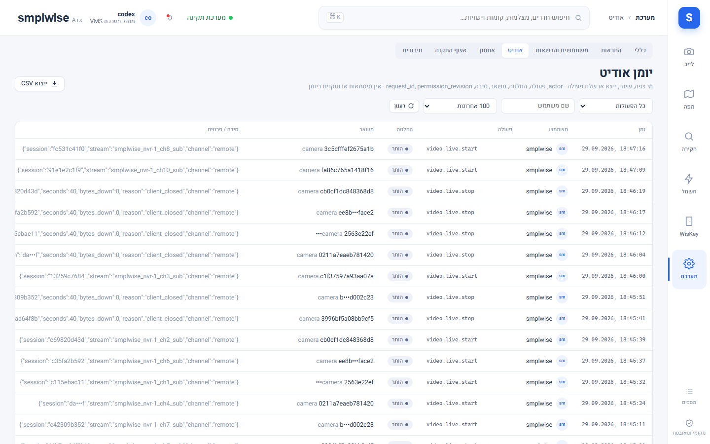
צילום מהמערכת החיה.התראות והתקנת Arx כאפליקציה
מה זה
Arx אפשר להתקין כאפליקציה (PWA) — אייקון במסך הבית של הטלפון או בשולחן העבודה, פתיחה במסך מלא — ולקבל ממנו התראות Push גם כשהוא סגור. ההתראות הן אישיות: כל משתמש בוחר בלשונית מערכת ← התראות אילו סוגי התראות יגיעו אליו, ומתי לשתוק. ההתראה עצמה קצרה (כותרת, משפט אחד, קישור); הפרטים, התמונות והווידאו נטענים רק אחרי שפותחים את Arx ומזדהים. אף פעם לא תגיע התראה על מצלמה או קומה שאין לכם גישה אליה — השרת בודק את ההרשאות שלכם ברגע שההתראה נוצרת.
הלשונית "התראות" פתוחה לכל משתמש, גם למי שאין לו גישה לשאר ההגדרות.
איך אני… (כל משתמש)
- מתקין את Arx באנדרואיד (Chrome) או במחשב (Chrome / Edge). כשהדפדפן מאפשר התקנה, מופיע בתחתית המסך הכרטיס "התקן את Arx". לוחצים התקנה ומאשרים. "לא עכשיו" מסתיר את הכרטיס לשבועיים. אפשר גם דרך תפריט הדפדפן ("התקנת אפליקציה" / "הוספה למסך הבית").
- מתקין את Arx באייפון או באייפד. ל־Safari אין כפתור התקנה, ולכן Arx מציג הסבר: ב־Safari מקישים על שיתוף (הריבוע עם החץ) ואז "הוספה למסך הבית". באייפון ובאייפד התראות מגיעות רק לאפליקציה שהותקנה כך (iOS 16.4 ומעלה) — פותחים את Arx מהאייקון במסך הבית ורק אז מפעילים התראות.
- מפעיל התראות במכשיר הזה. מערכת ← התראות ← "הפעלת התראות במכשיר הזה", ומאשרים את בקשת הדפדפן להציג התראות. המצב משתנה ל"פעיל". כל מכשיר ודפדפן נרשם בנפרד; אפשר עד 10 מכשירים למשתמש.
- בודק שזה עובד. "שליחת התראת בדיקה" שולחת התראה לכל המכשירים שלכם (עד 3 בדיקות בדקה).
- בוחר אילו התראות לקבל (ואז "שמירת ההעדפות"):
- התראות מחוקים — כל התראה שחוק ב"חוקים והתראות" מעלה (תנועה, חציית קו, אדם, רכב…).
- דלתות וכניסה — פתיחה, נעילה ושחרור של דלתות ומנעולים בבית. אירועי WisKey (שיחות מעמדות) עוד לא נשמרים כאירועים ב־Arx, ולכן אינם נשלחים היום.
- תקלות בהתקנים — מצלמה שאיבדה וידאו, חבלה, דיסק, חיישן שנעלם.
- בריאות המערכת — אירועי מערכת של ה־NVR (רשת, התנגשות כתובות, גישה לא חוקית).
- מגדיר שעות שקט. מפעילים "שעות שקט" ובוחרים טווח (למשל 22:00–07:00; טווח לילה עובר את חצות). השעות לפי אזור הזמן של המערכת. "התראות קריטיות גם בשעות השקט" (ברירת מחדל: כן) מעביר רק התראות בחומרה קריטית — למשל מצלמה שאיבדה וידאו.
- מכבה התראות במכשיר. "כיבוי במכשיר הזה", או "הסרה" ליד מכשיר ברשימת "המכשירים שלי" (למשל טלפון ישן).
- לוחץ על התראה. Arx נפתח ישירות באירוע (מרכז אירועים ← האירוע). אם Arx כבר פתוח, החלון הקיים עובר לאירוע. בתוך תשתית המערכת, הלחיצה פותחת את Arx בעמוד שלה.
איך זה עובד (בקצרה)
- התראות נוצרות מחוקים (חקירה ← חוקים והתראות): כל התראה שחוק מעלה נשלחת גם כהתראת Push, למי שמותר לו לראות אותה — אותו כלל כמו ברשימת ההתראות: התראה על מצלמה מגיעה למי שיש לו
events.readעל המצלמה או על הקומה / המבנה / האתר שלה; התראה בלי מצלמה (למשל חיישן דלת) מגיעה רק למי שיש לוevents.readבכל ההתקנה. בלי חוק — אין התראה. - אותו חשבון מערכת נחשב אותו משתמש בכל דרך כניסה: מכשיר שנרשם מתוך תשתית המערכת ומכשיר שנרשם בגישה מרחוק מקבלים אותן התראות.
- כשהדפדפן או שירות ה־Push מודיעים שההרשמה כבר לא קיימת, היא נמחקת אוטומטית. מכשיר שלא נפתח 120 יום נמחק מהרשימה.
- יותר מ־10 התראות בדקה למשתמש נחסמות לאותה דקה (כדי שהטלפון לא יוצף).
- כשיש גרסה חדשה של Arx מופיע "גרסה חדשה של Arx זמינה" עם כפתור רענון.
- בלי חיבור לרשת, Arx מציג את המסך האחרון שנשמר או הודעה "אין חיבור לשרת". וידאו ונתונים חיים זמינים רק כשיש חיבור.
שים לב
- דרוש https. התראות Push עובדות רק בכתובת מאובטחת — גישה מרחוק (
https://<האתר>/arx) או Home Assistant בכתובת https. בכתובתhttp://מקומית הלשונית מסבירה שזה לא אפשרי. - דפדפן שחסם התראות — הלשונית אומרת זאת. משחררים בהגדרות האתר בדפדפן (סמל המנעול ליד הכתובת) ומרעננים.
- מה נשלח ומה לא: ההתראה מכילה כותרת, טקסט קצר, קישור לאירוע, מזהה אירוע, סוג וחומרה — בלי תמונה, בלי סיסמה ובלי אסימון. התוכן מוצפן מקצה לקצה עד המכשיר; שירות ה־Push של הדפדפן (Google, Apple, Mozilla, Microsoft) רק מעביר אותו.
- יומן ביקורת: הרשמה, הסרה, שינוי העדפות ושליחת בדיקה נרשמים ביומן הביקורת (בלי כתובת ההרשמה עצמה).
- מפתח ה־VAPID (המפתח שבו Arx חותם על ההתראות) נוצר פעם אחת בכל התקנה ונשמר רק בשרת המערכת. הוא לא נכלל בגיבוי פרויקט של Arx, אבל כן נכלל בגיבוי המלא של תשתית המערכת — שמרו קבצי גיבוי כאלה כמו סיסמה. בשחזור גיבוי פרויקט בהתקנה אחרת, מכשירים שמאשרים התראות נרשמים מחדש בשקט בפתיחה הבאה של Arx.
- החלפת המפתח (מנהל מערכת). בתחתית מערכת ← התראות: "החלפת המפתח" (לחיצה שנייה מאשרת). כל ההרשמות של כל המשתמשים נמחקות, וכל מכשיר נרשם מחדש עם המפתח החדש בפתיחה הבאה. משתמשים בזה רק אם המפתח אולי נחשף.
- שעות שקט דורשות שתי שעות שונות; "מ־22:00 עד 22:00" נדחה.
מילון מונחים — עברית ↔ אנגלית
מה זה
רשימת מונחי מוצר, לפי סדר א-ב עברי, לצוות שעובר בין השפות (למשל כשקוראים את CHANGELOG.md באנגלית מול המדריך בעברית) או שצריך למסור מונח מדויק לתמיכה. מונחים טכניים כלליים (HTTP, SQLite) לא נכללים; רק מונחי מוצר.
| עברית | English | הסבר קצר |
|---|---|---|
| אודיט / יומן ביקורת | Audit log | רישום כל פעולה מורשית/נדחית, מי ומתי ולמה |
| אזור | Area | חלל בעל שם על תוכנית קומה (חדר/אזור/מסדרון/חוץ/שירות); גם אזור בתשתית המערכת |
| אזור זמן | Time zone | ה-IANA zone שאליו מתורגמים כל הזמנים המוצגים (time.zone) |
| אישור פרטיות | Privacy acknowledgement | הסכמה מפורשת לפני ששולחים משהו לספק חיצוני (AI, סקינים) |
| בקרות כניסה | Access control | ההגדרות שקובעות אם מסך WisKey מוטמע או SMPLWISE |
| גיבוי ושחזור | Backup / Restore | ייצוא/ייבוא של נתוני הפרויקט |
| גרסת תוכנית | Plan version | תמונת מצב מפורסמת של קומה; לא נמחקת לעולם |
| הרשאה אפקטיבית | Effective permission | מה שמשתמש נתון רשאי לעשות בפועל, אחרי חישוב תפקיד+היקף+קבוצות |
| הרשאה רגישה | Sensitive permission | הרשאה שחייבת סימון מפורש בתפקיד מותאם אישית (למשל door.unlock) |
| היקף | Scope | רמת ההרשאה: כל ההתקנה / אתר / מבנה / קומה |
| הענקה | Grant | הרשאה בודדת שהוענקה במפורש בתוך תפקיד |
| האצלה | Delegation | מנהל אתר משייך תפקידים בתוך היקפו, בכפוף למגבלות |
| חשמל והתקנים | Devices (area) | האזור לשליטה בציוד הבית לפי מבנה/קומה/אזור |
| חדר | Room | אזור מסוג "חדר" (סוג ספציפי בתוך "אזורים") |
| חיפוש מרחבי | Spatial search | שדה חיפוש עולמי (Ctrl/⌘K) שמוצא חדרים, מצלמות, ישויות |
| כיול | Calibration | סימון מרחק ידוע על התוכנית כדי שמרחקים יוצגו במדויק, לא כאומדן |
| מדיניות אחסון | Storage policy | תוכנית הקלטה כפי שה-NVR מדווח אותה (קריאה בלבד) |
| מנהל אתר | Site admin | תפקיד לניהול משתמשים/תפקידים/פעולות מרוכזות בהיקף אתר |
| מנהל מערכת | System admin | תפקיד עם כל ההרשאות, כולל הגדרות והרשאות מערכת |
| מסך קיוסק | Kiosk wall | תצוגת קיר ללא תפריטים, מפה ווידאו חי בלבד |
| מפה היסטורית | History map | תצוגת מפה של רגע שחלף, קריאה בלבד |
| מפעיל | Operator | תפקיד שמאשר אירועים, מנהל תיקים, שולט בהתקנים בודדים |
| מקרא | Legend | מקרא סמלים על המפה (פינה ימנית-תחתונה) |
| ניגון מסונכרן | Synchronized playback | ניגון עד 4 מצלמות יחד סביב זמן ייחוס אחד |
| ספריית אנשים | People directory | לשונית WisKey לניהול אנשים, PIN וכרטיסים |
| עורך | Editor | תפקיד שמייבא/עורך תוכניות קומה וממקם מצלמות/ישויות |
| עיבוד לשפת SMPLWISE | Render to SMPLWISE language | ניקוי חזותי מקומי של שרטוט לתוכנית סכמטית |
| פעולה מרוכזת | Bulk action | פעולה על כמה התקנים בבת אחת (כיבוי קומה/אזור/מבנה) |
| פרסום (גרסה) | Publish (a version) | הפיכת טיוטת תוכנית לגרסה שהצופים רואים |
| צופה | Viewer | התפקיד המצומצם ביותר — קריאה בלבד |
| קונוס ראייה | Field-of-view cone | ההמחשה החזותית של כיוון מצלמה על המפה (לא נמדד באמת) |
| קליטת כרטיס | Card capture | תהליך רישום כרטיס RFID חדש דרך קורא עמדת דלת |
| רענון | Refresh | בקשת עדכון מיידי של המבנה וההתקנים מתשתית המערכת |
| שכבה (במפה) | Layer | קבוצת סמלים שאפשר להראות/להסתיר על המפה (מצלמות, תאורה…) |
| שיוך (תפקיד) | Role binding | קישור תפקיד↔היקף למשתמש או לקבוצה |
| תיק חקירה | Case | אוסף ראיות (סימניות/עותקים שמורים) סביב אירוע |
| תפקיד מותאם אישית | Custom role | תפקיד שנבנה מהרשאות בודדות, לא אחד מהמובנים |
| תצוגה (שמורה) | (Saved) view | קבוצת מצלמות עם שם ופריסה, שמורה לשימוש חוזר |
| Bridge (גשר) | — | אינטגרציית smplwise_bridge ב-Home Assistant, מתווכת פעולות בזהות המשתמש |
| DXF | — | פורמט שרטוט וקטורי הניתן לייבוא ישיר (DWG חייב המרה ל-DXF קודם) |
| go2rtc | — | שרת ממסר וידאו חיצוני; רק זרמי smplwise_* שייכים למוצר |
| Ingress | — | מנגנון ה-Proxy של Home Assistant שדרכו האפליקציה נטענת ומזוהה המשתמש |
| MSE / WebRTC | — | שתי שיטות שידור וידאו חי; MSE ברירת המחדל, עובד מאחורי CGNAT/מנהרות |
| NVR | — | Network Video Recorder — יחידת ההקלטה של Hikvision |
| PTS↔UTC | — | עוגן זמן בין הזרם המקורי לזמן אמיתי; עדיין לא מאומת (best effort) |
| RTSP | — | פרוטוקול הזרמת הווידאו מה-NVR |
| WisKey | — | מותג האינטרקום/בקרת הכניסה שמוטמע כברירת מחדל באזור בקרת הכניסה |
מגבלות ידועות
מה זה
עמוד זה מרכז מה שהמוצר עדיין לא עושה, ולמה — כדי שצוות שמשתמש בו לא יפרש התנהגות מתועדת כתקלה. המקור: docs/release/RELEASE_PACKAGE_V1_HE.md סעיף 4 (מגבלות ידועות שעברו ל-V1 כהתנהגות מתועדת) בתוספת עדכוני smplwise_vms/CHANGELOG.md העדכניים ביותר (עד 0.1.130). כמה פריטים ב-RELEASE_PACKAGE_V1_HE.md המקורי מתייחסים לגרסה 0.1.81 ולכן מסומנים כאן עם הערת עדכון.
וידאו, ניגון ואירועים
- התראות NVR דורשות "Notify Surveillance Center" בקישוריות זיהוי התנועה של ה-NVR עצמו; בלעדיה זרם ההתראות שקט ואירועי תנועה נגזרים מהקלטות בלבד (כל 10 דקות, בלי אירועי אדם/כלי רכב). מרכז האירועים, הסקירה הכללית ועמוד החיבורים מציינים זאת.
- ניגון מסונכרן רב-מצלמות הוא best effort — אין עוגן PTS↔UTC מאומת. במעבדת הפיילוט: ארבעה אריחים מידרדרים לשניות של סחיפה אחרי דקה-שתיים; קיוסק של תשעה זרמים יכול לתקוע אריח אחד.
- מהירויות ניגון: 1×, האטה ×0.5/×0.25 וצעידת פריים בלבד (נתיב MSE). 2×/4× מושבתות — הממסר מספק את זרם ה-NVR בזמן אמת בלבד, כך שמהירות ה-RTSP בצד המצלמה לא נחשפת.
- וידאו חי דורש דפדפן עם תמיכת H.264 אמיתית (Chrome/Edge/Safari/Firefox בשולחן עבודה) — ל-Chromium המובנה של Playwright אין תמיכה כזו.
- PTZ ואודיו דו-כיווני לא נחשפים עד שהיכולת מאומתת לכל מצלמה בנפרד (עובדות היכולת מוצגות כקריאה בלבד בעמוד המצלמה).
תוכנית קומה ו-Plan Studio
- תוכניות DXF/DWG: DXF נתמך ישירות (עם בדיקת יחידות/שכבות); DWG חייב המרה ל-DXF תחילה. טקסט, הצללות, מידות וישויות תלת-ממד נספרים ומדווחים כהמרה חלקית — לא מרונדרים.
- זיהוי חדרים ומבנה הוא הצעה בלבד, עיבוד תמונה מקומי (אין AI) — הוא לא קורא שמות חדרים מהשרטוט. אב-טיפוס לקירות דקים-חלולים חיצוניים נמצא עדיין בשלב מוקדם (מוזג קירות סמוכים) ולא בשימוש.
- דלתות (arcs) לא נרדפות בזיהוי האוטומטי בכוונה — רוב הקשתות בשרטוטי המעבדה לא ניתנות לזיהוי אמין; מודל דלת חדש הוא משימה נפרדת (0.1.130).
חשמל והתקנים
- מיקום/גודל לכל התקן בודד עדיין לא נתמך — יחידת העריכה כיום היא כרטיס דומיין שלם (כמו בעורך "Edit board" של המוקאפ), לא התקן בודד.
- **
devices.controlו-devices.control_bulkלעולם לא מגיעים** למנעולים, לוחות אזעקה, סירנות, scripts, scenes, buttons,input_boolean, תריסי דלת/מוסך/שער או כל התקן על שכבת הדלת במפה — אלה תמיד מאחוריha.entity.control(ובנוסףdoor.unlock/alarm.disarm). - פעולות Home Assistant מוגבלות לרשימת היתר (light/switch/fan/climate/cover/lock/…) בלי ארגומנטים חופשיים; widgets של ישות גנריים (מצב, יחידה, שינוי אחרון).
WisKey / בקרת כניסה
- קליטת כרטיס לא אומתה מול עמדה פיזית אמיתית — נבנתה מול קוד המקור של WisKey ו-fixture בלבד. לא ידוע עדיין: אם עמדה אמיתית קולטת כרטיס בדרך הזו בכלל; אם כרטיס רשום שמוצג בקליטה גם נפתח בפועל את הדלת; משך הזמן שהקורא נשאר במצב קליטה אחרי ביטול/timeout. יש לבצע בדיקה חיה ראשונה עם מישהו בדלת.
- בפאנל WisKey המוטמע, הרשאות WisKey עצמו (לא SMPLWISE) מחליטות — משתמש עם
manageשל WisKey יכול לשחרר דלתות ולערוך אנשים בלי שלב אישור ובלי רישום ביומן הביקורת של SMPLWISE. - דורש WisKey 2.0.0-rc.19 ומעלה לחוזה ההטמעה המלא (contract v1); גרסאות ישנות יותר עובדות בשיטת deep-link קודמת, פחות חלקה.
הרשאות ומנהל
- היקף קישור לפי-מצלמה בודדת עדיין לא קיים — ההיקף העדין ביותר הוא קומה.
- מה שמשתמש מוגבל רואה בניווט נקבע לפי קישוריו (
TAB_PERMISSIONS); URL ישיר למסך אסור מציג פאנל נעילה, לא שגיאה טכנית.
מוחרג מ-V1 (הוצע לבעלים, טרם אושר סופית)
- אינטרקום / בקרת כניסה עצמאית של המוצר (T054) — אין עמדת דלת פיזית במעבדה; נתיב ה-relay-pulse קיים אך מסך הדלתות מציין "עוד לא מחובר". בפועל הוחלף בהטמעת WisKey (סעיף 50), אך הפריט המקורי עדיין מופיע כהחרגה מפורשת ברשימת הכרטיסים.
- NVR שני / ריבוי אתרים (T058) — refactor של קטלוג בהיקף שעות, שראיית הקבלה שלו זקוקה למקליט שני.
תשתית ועומס
- תקציב מקביליות: עד 4 מפעילים מקבילים נבדק בתחנת העבודה הייחוס; דוח האחסון מתחמם ברקע (בנייה קרה כ-30–50 שניות על ה-NVR של המעבדה).
- שינויי גשר (bridge) דורשים הפעלה מחדש אחת של Home Assistant לפני שפעולות/שירותים חדשים זמינים בפועל (מתועד גם ב-
50-wiskey_HE.mdוב-80-settings_HE.md). - בדיקת עמידות (soak) התלוית-התקנים עדיין פתוחה — רק החצי ללא-התקנים (NVR/HA מדומים, הפעלות מחדש, קליטה, ייצוא לדיסק מלא) רץ עד כה (
SOAK_LOCAL_HE.md); הפעלות מחדש אמיתיות של go2rtc/NVR על מארח ה-Home Assistant נשארות ברשימת הבדיקה של המעבדה. בנוסף, ה-remux של ffmpeg שרץ אחרי ההורדה אינו מוגן מדיסק מלא — דיסק שמתמלא בדיוק בשלב הזה עלול להכשיל את ה-remux, ואז נמסרים קבצי ה-NVR הגולמיים במקום.
שים לב
- רשימה זו מתעדכנת עם כל סבב תיעוד; היא אינה רשימת "באגים" אלא גבולות מכוונים או מגבלות חומרה/ קושחה מתועדות. אם התנהגות לא מופיעה כאן ונראית שגויה — יש לדווח כממצא, לא להניח שהיא ידועה.
- מספור הגרסאות בהערות ההיסטוריות (
RELEASE_PACKAGE_V1_HE.md) נשאר כפי שתורגם במקור ולא עודכן בדיעבד; ראו את הערת התרגום בראש אותו מסמך.
פתרון תקלות
מה זה
עמוד זה בנוי מתוך דיווחי בעלים אמיתיים בבדיקות המעבדה (smplwise_vms/CHANGELOG.md) — לכל שורה תסמין, הסיבה בפועל ומה לעשות. לאבחון ראשוני תמיד מתחילים באותו מקום: הנורית בסרגל העליון (ירוק = כל מה שה-add-on רואה עובד, ענבר = משהו דורש תשומת לב, אדום = כשל עם באנר על כל מסך), ואז הגדרות ← בריאות ועבודות — כרטיס נפרד לכל תת-מערכת (NVR, go2rtc, גשר HA, קליטת אירועים, מאגר) עם סטטוס וסיבה; "בדוק עכשיו" בודק שוב את ה-NVR וה-go2rtc.
איך אני… (כל תפקיד)
- "אין חיבור לשרת" מופיע גם כש-Home Assistant וה-add-on למעלה. נצפה בהדלקת תאורה מהמפה דרך http רגיל ב-LAN (לא https): הדפדפן חוסם
crypto.randomUUID()בהקשרים לא מאובטחים, וזה נראה כמו כשל רשת אף שאין. תוקן ב-0.1.117 — אם עדיין קורה, לוודא שהגרסה 0.1.117 ומעלה מותקנת. - WisKey לא נטען באפליקציית הטלפון (Companion), עם "לא ניתן לטעון את WisKey מתוך Home Assistant". האפליקציה מתחברת ל-HA דרך עצמה, וההתחברות הזו לא מגיעה ל-HA המקונן בתוך המסגרת המוטמעת. תוקן ב-0.1.123: האפליקציה מזוהה מראש (סוכן משתמש) ומציגה מסכי SMPLWISE + "פתח ב-WisKey" שמעביר לאפליקציה עצמה. זו התנהגות מכוונת של האפליקציה, לא תקלת רשת — ראו
50-wiskey_HE.md. - שני תפריטים כפולים בפאנל WisKey המוטמע. קרה לפני שהחוזה
embed-api-v1הרשמי של WisKey היה זמין. תוקן ב-0.1.127 יחד עם התקנת WisKey 2.0.0-rc.19 — יש להתקין דרך HACS, להפעיל מחדש את Home Assistant ולרענן את הדפדפן. בגרסאות ישנות יותר של WisKey המערכת ממשיכה בשיטה הישנה (סרגל כפול אפשרי, אבל פונקציונלי). - שינוי מבנה ב-Home Assistant (העברת ישות לאזור אחר, שינוי שם אזור) לא מופיע ב"חשמל והתקנים" בלי הפעלה מחדש. לפני 0.1.126 הסנכרון קרא את מרשמי ה-registry רק בהפעלה ואחת ל-600 שניות. תוקן ב-0.1.126: מנוי לאירועי registry דוחף עדכון תוך 1.5–10 שניות ("מבנה עודכן"); אם עדיין רואים עיכוב — לבדוק שגרסת הגשר בהגדרות ← גשר Home Assistant תואמת את מה שה-add-on מצפה לו, ושה-token אינו token מנהל שנחסם מרישום למנויים מסוימים.
- "database is locked" מופיע ביומן, בעיקר תחת עומס אמיתי (ייצוא/חיפוש NVR ממושכים במקביל לסנכרון HA). נבע מכתיבות שהחזיקו את מנעול הכתיבה היחיד של SQLite בזמן שהמתינו להתקן (חיפוש NVR, PUT הקלטה ידנית, פעולת bulk). תוקן ב-0.1.129 — שום קריאת התקן לא רצה יותר מתחת למנעול;
/health←db.write_lockמציג את זמן ההחזקה הארוך ביותר ואת מחזיקה האחרון. אם עדיין נראה — לשלוח את פלט/healthהזה לתמיכה, לא רק "זה קרה שוב". - **פעולה על ישות (מיזוג, מהירות מאוורר, מיקום תריס, שירות חדש) חוזרת עם "השירות אינו מורשה" (
service_not_allowed) אחרי עדכון גרסה. רשימת ההיתר של אינטגרציית הגשר צריכה להתעדכן בעצמה, וזה קורה רק בהפעלה מחדש של Home Assistant. מה לעשות: הגדרות ← גשר Home Assistant ← לוודא שמספר הגרסה שם עלה, ואם לא — להפעיל מחדש את Home Assistant פעם אחת**; ראו70-setup-wizard_HE.md. - מדדי זמן תגובה גבוהים או p95 גבוה בבדיקת עומס (כמה מפעילים במקביל). אלה לא באגים במוצר —
docs/operations/RESOURCE_BUDGET_HE.mdמראה שזמן קיר של סבב מקבילי גדל כי כמה בקשות חולקות תהליך Python אחד (worker יחיד); בקשה בודדת נשארת מהירה (p50 מתחת ל-300 מ"ש ברוב המסכים). התקציב המחויב של הפיילוט הוא עד 4 מפעילים במקביל; מדידת זמן תחת עומס גבוה יותר ממה שנבדק היא ציפייה שגויה, לא ממצא לדיווח כתקלה. - "Home Assistant לא העביר זהות משתמש." ה-Supervisor לא שלח את הכותרות
X-Remote-User-*— לעדכן Supervisor/Core; ה-add-on מסרב לנחש זהות. - "אין הרשאה" למשתמש שפתח את ה-add-on. למשתמש ה-HA שלכם אין עדיין תפקיד VMS — יש לפנות למנהל המערכת (או למי שהוגדר כ-
bootstrap_admin_username) להקצות תפקיד.
איפה בודקים לעומק
- יומני ה-add-on: לשונית ה-Log של ה-add-on עצמו ב-Home Assistant.
log_level: debug(באפשרויות ה-add-on) מוסיף פרטי בקשה — לעולם לא מדפיס סודות (מפתחות API, סיסמאות). - **
/api/v1/health:** תקציר בריאות מכונה לכל תת-מערכת (כוללdiscovery.cameras_last_errorלגילוי מצלמות ו-db.write_lockלמנעולי מסד הנתונים) — זה מה שהגדרות ← בריאות ועבודות מציג, אבל בפורמט שאפשר לשלוח לתמיכה כטקסט. - יומן הביקורת (הגדרות ← יומן אודיט): כל דחייה (הרשאה, gate, revision מיושנת) נכתבת עם הסיבה שלה — שימושי כשמשהו "לא קרה" ורוצים לדעת אם המערכת דחתה בכוונה או שזו תקלה.
- רשימת בדיקה מרוכזת למעבדה (מה שאין דרך לבדוק אוטומטית):
docs/operations/LAB_CHECKLIST_2026-09-29_HE.md.
שים לב
- לפני שמדווחים על תקלה, כדאי לוודא גרסה עדכנית (חלק גדול מהרשימה כאן כבר תוקן) ושבוצעה הפעלה מחדש של Home Assistant אם התבקשה.
- בדיווח תקלה: מספר הגרסה, מה נעשה, מה ציפיתם ומה קרה בפועל, וצילום מסך. בלי כתובות IP, מספרים סיריאליים או כתובות MAC של המעבדה.